B4_flowkit · Fable 5.2 · attempt VrxiLbP
Batch fb2 · job fb2_B_EXP23000279_rep1_230309_flowkit_claude-fable-5-2 · trial B_EXP23000279_rep1_230309_flowki__VrxiLbP. Long tool outputs are cut at 6,000 characters.
Score
0.45
0.45
Minutes
9.2
9.2
Agent cost
$3.40
$3.40
Steps
96
96
Screenshots / images
15
15
2
tool call · Bash
cd /task; cat inputs/plan.md; echo ----; cat inputs/plate_layout.csv; ls -la inputs/raw; ls /root/.claude/projects/-task/memory/ 2>/dev/null
3
tool output
# EXP23000279 | Caspase Assay in WT and PGRNKO iPSC Derived Neurons Notebook plan for the run acquired on 2023-03-09. This is the scientist's text as written, up to the start of this run's results. ## DAY 2023-03-09 ### Background: Loss of function of PGRN has been shown to negatively impact neural cell health reflected by increased cell death and caspase activity. Caspases are important mediators of the cell death pathway (apoptosis). Caspases are a group of proteases that result in cleavage of protein substrates subsequently leading to cell disassembly. For the PGRN RNAswap program we will want to measure caspase activity in iPSC derived neurons before and after adding the PGRN RNAswap constructs to ensure that PGRN protein replacement is rescuing the health of neurons. Before testing if AAV-PGRN constructs help restore neural health I will test and optimize the assay on the neurons with no AAV. ### Objective: For first round of experiments will be optimizing the assay. The goal will be to determine if a difference in caspase activity is present in PGRNKOs compared to WT PGP1 neurons. Camptothsesin (topoisomerase inhibitor) will be added. ### Materials: - Camptothecin - CellEvent Caspase 3/7 reagent - DMSO - Zombie NIR ### Procedure: - Differentiate WT and PGRNKO iPSC into neurons - Once cells are sufficiently neuronal can run caspase assay. - Add camptothecin Follow plate maps below. | Dose | for 1 well | |---|---| | 10uM | 20uL of 250uM stock into 500uL media | | 5uM | 10uL of 250uM stock into 500uL media | | 2uM | 4uL of 250uM stock into 500uL media | | 1uM | 2uL of 250uM stock into 500uL media | | DMSO (no treatment controls) | 10uL into 500uL media | - Incubate with camptothecin for 4.5hrs WT plate map (as written): ``` WT DMSO | WT 5uM camptothecin | WT caspase stain only WT no treatment | WT 10uM camptothecin | WT caspase stain only WT 1uM camptothecin | WT no stain | WT L/D only WT 2uM camptothecin | WT no stain | WT L/D only ``` KO plate map (as written): ``` KO DMSO | KO 5uM camptothecin | KO caspase only KO no treatment | KO 10uM camptothecin | KO caspase only KO 1uM camptothecin | KO no stain | KO L/D only KO 2uM camptothecin | KO no stain | KO L/D only ``` 5. Run flow Flow plate map (as written; the remaining rows of the table are empty): ``` WT no stain | WT no stain | WT caspase only | WT caspase only | WT L/D only | WT L/D only | WT 10uM camptothecin | WT 5uM camptothecin | WT 2uM camptothecin | WT 1uM camptothecin | WT DMSO | WT no treatment KO no stain | KO no stain | KO caspase only | KO caspase only | KO L/D only | KO L/D only | KO 10uM camptothecin | KO 5uM camptothecin | KO 2uM camptothecin | KO 1uM camptothecin | KO DMSO | KO no treatment ``` 3. Run CellEvent flow assay - Aspirate media and wash with PBS - Add 150uL accutase incubate for 5-10min - Add 75uL FBS and collect into 96w round bottom plate - spin down 200xg for 5min - Add 200uL Zombie NIR at 1:500 (4mL PBS+ 8uL Zombie) Incubate for 10min - Spin down and remove Zombie stain - Add 200uL of Cell Event Caspase 3/7 Detection reagent (1:1000) in flow staining buffer. Incubate for 30min at 37C (4mL +4uL reagent) - Analyze the samples without fixing. ---- file,well,sample,genotype,treatment Caspase_WT_KO_optimization_caspase_Group_A2.fcs,A2,WT no stain,WT,no stain Caspase_WT_KO_optimization_caspase_Group_A4.fcs,A4,WT caspase only,WT,caspase only Caspase_WT_KO_optimization_caspase_Group_A6.fcs,A6,WT L/D only,WT,L/D only Caspase_WT_KO_optimization_caspase_Group_A7.fcs,A7,WT 10uM camptothecin,WT,10uM camptothecin Caspase_WT_KO_optimization_caspase_Group_A8.fcs,A8,WT 5uM camptothecin,WT,5uM camptothecin Caspase_WT_KO_optimization_caspase_Group_A9.fcs,A9,WT 2uM camptothecin,WT,2uM camptothecin Caspase_WT_KO_optimization_caspase_Group_A10.fcs,A10,WT 1uM camptothecin,WT,1uM camptothecin Caspase_WT_KO_optimization_caspase_Group_A11.fcs,A11,WT DMSO,WT,DMSO Caspase_WT_KO_optimization_caspase_Group_A12.fcs,A12,WT no treatment,WT,no treatment Caspase_WT_KO_optimization_caspase_Group_B2.fcs,B2,KO no stain,KO,no stain Caspase_WT_KO_optimization_caspase_Group_B4.fcs,B4,KO caspase only,KO,caspase only Caspase_WT_KO_optimization_caspase_Group_B6.fcs,B6,KO L/D only,KO,L/D only Caspase_WT_KO_optimization_caspase_Group_B7.fcs,B7,KO 10uM camptothecin,KO,10uM camptothecin Caspase_WT_KO_optimization_caspase_Group_B8.fcs,B8,KO 5uM camptothecin,KO,5uM camptothecin Caspase_WT_KO_optimization_caspase_Group_B9.fcs,B9,KO 2uM camptothecin,KO,2uM camptothecin Caspase_WT_KO_optimization_caspase_Group_B10.fcs,B10,KO 1uM camptothecin,KO,1uM camptothecin Caspase_WT_KO_optimization_caspase_Group_B11.fcs,B11,KO DMSO,KO,DMSO Caspase_WT_KO_optimization_caspase_Group_B12.fcs,B12,KO no treatment,KO,no treatment total 295248 dr-xr-xr-x 2 root root 4096 Nov 10 16:58 . dr-xr-xr-x 3 root root 4096 Nov 10 16:58 .. -r--r--r-- 1 root root 19901440 Nov 10 16:58 Caspase_WT_KO_optimization_caspase_Group_A10.fcs -r--r--r-- 1 root root 13588120 Nov 10 16:58 Caspase_WT_KO_optimization_caspase_Group_A11.fcs -r--r--r-- 1 root root 14734864 Nov 10 16:58 Caspase_WT_KO_optimization_caspase_Group_A12.fcs -r--r--r-- 1 root root 13174696 Nov 10 16:58 Caspase_WT_KO_optimization_caspase_Group_A2.fcs -r--r--r-- 1 root root 15877720 Nov 10 16:58 Caspase_WT_KO_optimization_caspase_Group_A4.fcs -r--r--r-- 1 root root 14866264 Nov 10 16:58 Caspase_WT_KO_optimization_caspase_Group_A6.fcs -r--r--r-- 1 root root 14246704 Nov 10 16:58 Caspase_WT_KO_optimization_caspase_Group_A7.fcs -r--r--r-- 1 root root 13867912 Nov 10 16:58 Caspase_WT_KO_optimization_caspase_Group_A8.fcs -r--r--r-- 1 root root 15425344 Nov 10 16:58 Caspase_WT_KO_optimization_caspase_Group_A9.fcs -r--r--r-- 1 root root 19416016 Nov 10 16:58 Caspase_WT_KO_optimization_caspase_Group_B10.fcs -r--r--r-- 1 root root 20210356 Nov 10 16:58 Caspase_WT_KO_optimization_caspase_Group_B11.fcs -r--r--r-- 1 root root 19384228 Nov 10 16:58 … [606 more characters not shown]
5
tool call · Bash
cd /task; mkdir -p work outputs; cat > work/meta.py <<'EOF'
import flowio, glob, os, sys
fs = sorted(glob.glob('/task/inputs/raw/*.fcs'))
for i,f in enumerate(fs):
fd = flowio.FlowData(f)
t = fd.text
if i==0:
for k in sorted(t):
v=t[k]
print(k, '=', v[:300])
print(os.path.basename(f), fd.event_count, t.get('$btim'), t.get('$etim'), t.get('$vol'), t.get('$src'), t.get('$smno'), t.get('tube name'), t.get('$wellid'), t.get('$plateid'), t.get('$date'))
EOF
python3 -I work/meta.py6
tool output
#coincidentcount = 69063 #flowrate = 200 #laser1asf = 1.05 #laser1color = Blue #laser1delay = 1100 #laser2asf = 1.09 #laser2color = Red #laser2delay = 1497 #laser3asf = 0.89 #laser3color = Violet #laser3delay = 717 #laser4asf = 0.99 #laser4color = Yellow #laser4delay = 304 #laserconfig = BRV6Y #p1label = NA #p1target = NA #p4label = Caspase #p4target = AAV-GFP #p5label = Zombie NIR #p5target = LiveDead #ptdate = 09-Mar-2023 #ptresult = Pass #tr1 = OR_FSC,25000 #widththreshold = 1000 #winext = 0 beginanalysis = 000000000000 begindata = 000000008192 beginstext = 000000000000 btim = 15:20:56 byteord = 1,2,3,4 cells = NA com = NA cyt = 0A29009 Attune NxT Acoustic Focusing Cytometer (Lasers: BRV6Y) cytsn = 2AFC228071019 datatype = F date = 09-Mar-2023 endanalysis = 000000000000 enddata = 000019901431 endstext = 000000000000 etim = 15:21:44 exp = NA fil = A10.fcs hostid = SEA11065ATTUNE inst = NA lost = 0 mode = L nextdata = 000000000000 op = Jeff Huang originality = Original p1b = 32 p1e = 0,0 p1f = NA p1l = NA p1n = Time p1r = 67108864 p1s = Time p1v = NA p2b = 32 p2e = 0,0 p2f = NA p2l = 488 p2n = FSC-A p2r = 1048576 p2s = FSC-A p2v = 30 p3b = 32 p3e = 0,0 p3f = NA p3l = 488 p3n = SSC-A p3r = 1048576 p3s = SSC-A p3v = 300 p4b = 32 p4e = 0,0 p4f = NA p4l = 488 p4n = BL1-A p4r = 1048576 p4s = AAV-GFP-Caspase-A p4v = 250 p5b = 32 p5e = 0,0 p5f = NA p5l = 640 p5n = RL3-A p5r = 1048576 p5s = LiveDead-Zombie NIR-A p5v = 300 p6b = 32 p6e = 0,0 p6f = NA p6l = 488 p6n = FSC-H p6r = 1048576 p6s = FSC-H p6v = 30 p7b = 32 p7e = 0,0 p7f = NA p7l = 488 p7n = SSC-H p7r = 1048576 p7s = SSC-H p7v = 300 p8b = 32 p8e = 0,0 p8f = NA p8l = 488 p8n = FSC-W p8r = 1024 p8s = FSC-W p8v = 30 p9b = 32 p9e = 0,0 p9f = NA p9l = 488 p9n = SSC-W p9r = 1024 p9s = SSC-W p9v = 300 par = 9 plateid = NA platename = Caspase_WT_KO_optimization proj = caspase smno = Group spillover = 2,BL1-A,RL3-A,1.000000,0.000000,0.000000,1.000000 src = NA sys = SEA11065ATTUNE Microsoft Windows 10 Enterprise LTSC timestep = 0.001 tot = 552590 vol = 158000 wellid = A10 Caspase_WT_KO_optimization_caspase_Group_A10.fcs 552590 None None None None None None None None None Caspase_WT_KO_optimization_caspase_Group_A11.fcs 377220 None None None None None None None None None Caspase_WT_KO_optimization_caspase_Group_A12.fcs 409074 None None None None None None None None None Caspase_WT_KO_optimization_caspase_Group_A2.fcs 365736 None None None None None None None None None Caspase_WT_KO_optimization_caspase_Group_A4.fcs 440820 None None None None None None None None None Caspase_WT_KO_optimization_caspase_Group_A6.fcs 412724 None None None None None None None None None Caspase_WT_KO_optimization_caspase_Group_A7.fcs 395514 None None None None None None None None None Caspase_WT_KO_optimization_caspase_Group_A8.fcs 384992 None None None None None None None None None Caspase_WT_KO_optimization_caspase_Group_A9.fcs 428254 None None None None None None None None None Caspase_WT_KO_optimization_caspase_Group_B10.fcs 539106 None None None None None None None None None Caspase_WT_KO_optimization_caspase_Group_B11.fcs 561171 None None None None None None None None None Caspase_WT_KO_optimization_caspase_Group_B12.fcs 538223 None None None None None None None None None Caspase_WT_KO_optimization_caspase_Group_B2.fcs 392795 None None None None None None None None None Caspase_WT_KO_optimization_caspase_Group_B4.fcs 605670 None None None None None None None None None Caspase_WT_KO_optimization_caspase_Group_B6.fcs 457465 None None None None None None None None None Caspase_WT_KO_optimization_caspase_Group_B7.fcs 612174 None None None None None None None None None Caspase_WT_KO_optimization_caspase_Group_B8.fcs 493435 None None None None None None None None None Caspase_WT_KO_optimization_caspase_Group_B9.fcs 425772 None None None None None None None None None
8
tool call · Bash
cd /task; cat > work/qc.py <<'EOF'
import flowio, glob, os, numpy as np, pandas as pd
lay = pd.read_csv('/task/inputs/plate_layout.csv')
rows=[]
pd.set_option('display.width',250); pd.set_option('display.max_columns',40)
for _,r in lay.iterrows():
fd = flowio.FlowData('/task/inputs/raw/'+r.file)
t = fd.text
a = np.reshape(np.array(fd.events,dtype=float),(-1,fd.channel_count))
names=[t[f'p{i}n'] for i in range(1,fd.channel_count+1)]
d = pd.DataFrame(a,columns=names)
row=dict(well=r.well,sample=r['sample'],wellid=t.get('wellid'),n=len(d),btim=t['btim'],etim=t['etim'],vol=t.get('vol'),coinc=t.get('#coincidentcount'),
tmin=d.Time.min(),tmax=d.Time.max(), volts='/'.join(t[f'p{i}v'] for i in range(2,6)), thr=t.get('#tr1'), flow=t.get('#flowrate'))
for c in ['FSC-A','SSC-A','BL1-A','RL3-A']:
row[c+'_p50']=round(np.median(d[c]));row[c+'_p99']=round(np.percentile(d[c],99)); row[c+'_sat%']=round(100*(d[c]>=1048575*0.99).mean(),2)
row[c+'_min']=round(d[c].min())
rows.append(row)
q=pd.DataFrame(rows); print(q.to_string())
EOF
python3 -I work/qc.py9
tool output
well sample wellid n btim etim vol coinc tmin tmax volts thr flow FSC-A_p50 FSC-A_p99 FSC-A_sat% FSC-A_min SSC-A_p50 SSC-A_p99 SSC-A_sat% SSC-A_min BL1-A_p50 BL1-A_p99 BL1-A_sat% BL1-A_min RL3-A_p50 RL3-A_p99 RL3-A_sat% RL3-A_min 0 A2 WT no stain A2 365736 15:13:25 15:14:13 157000 32822 14.0 47015.0 30/300/250/300 OR_FSC,25000 200 131228 1048575 1.30 -65536 116839 1048575 1.63 -65536 111 1755 0.00 -6274 17 235 0.0 -863 1 A4 WT caspase only A4 440820 15:14:40 15:15:28 158000 41140 14.0 47094.0 30/300/250/300 OR_FSC,25000 200 126702 899569 0.71 -65536 112912 1029521 0.98 -65536 3658 29645 0.00 -12744 17 200 0.0 -689 2 A6 WT L/D only A6 412724 15:15:56 15:16:43 154000 38046 14.0 46075.0 30/300/250/300 OR_FSC,25000 200 128331 939099 0.79 -26273 116932 1048575 1.17 -65536 153 1577 0.00 -1874 7664 69579 0.0 -21671 3 A7 WT 10uM camptothecin A7 395514 15:17:10 15:17:58 157000 31260 14.0 47051.0 30/300/250/300 OR_FSC,25000 200 130214 700411 0.35 -65536 117333 838569 0.60 -65536 7119 46617 0.00 -12562 10337 72547 0.0 -26439 4 A8 WT 5uM camptothecin A8 384992 15:18:26 15:19:13 157000 28906 14.0 46891.0 30/300/250/300 OR_FSC,25000 200 131300 761878 0.50 -24849 117828 924226 0.81 -65536 8610 59376 0.00 -25114 8865 65073 0.0 -62295 5 A9 WT 2uM camptothecin A9 428254 15:19:41 15:20:28 158000 39310 14.0 47195.0 30/300/250/300 OR_FSC,25000 200 128784 834413 0.61 -65536 111144 976187 0.88 -65536 6071 51884 0.00 -7412 7697 69380 0.0 -40570 6 A10 WT 1uM camptothecin A10 552590 15:20:56 15:21:44 158000 69063 14.0 47171.0 30/300/250/300 OR_FSC,25000 200 126672 1048575 1.30 -65536 118000 1048575 1.81 -65536 7427 68614 0.01 -50195 6223 66220 0.0 -41884 7 A11 WT DMSO A11 377220 15:22:11 15:22:59 157000 28444 14.0 47085.0 30/300/250/300 OR_FSC,25000 200 130592 731529 0.36 -4265 118698 853092 0.61 -65536 3698 26276 0.00 -958 7474 58222 0.0 -5642 8 A12 WT no treatment A12 409074 15:23:26 15:24:14 157000 57692 113.0 46926.0 30/300/250/300 OR_FSC,25000 200 143690 1048575 1.46 -65536 156074 1048575 2.07 -65536 5237 39323 0.00 -42958 11690 85513 0.0 -34906 9 B2 KO no stain B2 392795 15:24:41 15:25:29 157000 26007 14.0 47077.0 30/300/250/300 OR_FSC,25000 200 117351 484597 0.04 10274 120171 826996 0.47 -30601 189 1915 0.00 -345 17 184 0.0 -243 10 B4 KO caspase only B4 605670 15:25:56 15:26:44 157000 61934 14.0 47088.0 30/300/250/300 OR_FSC,25000 200 115368 519955 0.05 -51796 122120 878819 0.57 -65536 2134 13267 0.00 -1214 18 189 0.0 -1411 11 B6 KO L/D only B6 457465 15:27:12 15:28:00 157000 36300 13.0 47039.0 30/300/250/300 OR_FSC,25000 200 96359 545183 0.09 -28967 87267 771515 0.44 -65536 106 1428 0.00 -2735 7211 70263 0.0 -8987 12 B7 KO 10uM camptothecin B7 612174 15:28:27 15:29:15 158000 65284 14.0 47100.0 30/300/250/300 OR_FSC,25000 200 103318 550250 0.11 -65536 99952 881400 0.63 -65536 2950 22586 0.00 -56076 6719 62046 0.0 -65536 13 B8 KO 5uM camptothecin B8 493435 15:29:44 15:30:30 155000 41719 14.0 46105.0 30/300/250/300 OR_FSC,25000 200 109014 510351 0.09 -65536 112668 913954 0.70 -65536 2972 20806 0.00 -9000 8492 69851 0.0 -65530 14 B9 KO 2uM camptothecin B9 425772 15:30:58 15:31:46 157000 28737 14.0 47033.0 30/300/250/300 OR_FSC,25000 200 92593 461174 0.06 -65536 86948 732181 0.36 -65536 2108 17965 0.00 -2492 6239 57246 0.0 -10808 15 B10 KO 1uM camptothecin B10 539106 15:32:13 15:33:01 157000 47200 14.0 47060.0 30/300/250/300 OR_FSC,25000 200 101625 516353 0.08 -40230 98520 845168 0.54 -65536 3108 23370 0.00 -23998 7247 64387 0.0 -29598 16 B11 KO DMSO B11 561171 15:33:29 15:34:16 155000 55299 14.0 46098.0 30/300/250/300 OR_FSC,25000 200 97114 534987 0.10 -34826 93283 850081 0.57 -65536 1472 12626 0.00 -5472 3866 37066 0.0 -19566 17 B12 KO no treatment B12 538223 15:34:44 15:35:32 158000 51104 14.0 47205.0 30/300/250/300 OR_FSC,25000 200 103313 600001 0.14 -65536 99587 945409 0.77 -65536 1664 14751 0.00 -1471 3266 33167 0.0 -5538
11
tool call · Bash
cd /task; cat > work/load.py <<'EOF'
import flowio, numpy as np, pandas as pd
lay = pd.read_csv('/task/inputs/plate_layout.csv')
def load(file):
fd = flowio.FlowData('/task/inputs/raw/'+file)
t = fd.text
a = np.reshape(np.array(fd.events,dtype=np.float32),(-1,fd.channel_count))
names=[t[f'p{i}n'] for i in range(1,fd.channel_count+1)]
return pd.DataFrame(a,columns=names)
_cache={}
def get(well):
if well not in _cache:
_cache[well]=load(lay.set_index('well').loc[well,'file'])
return _cache[well]
EOF
cat > work/plot1.py <<'EOF'
import sys; sys.path.insert(0,'/task/work')
from load import *
import matplotlib; matplotlib.use('Agg'); import matplotlib.pyplot as plt
from matplotlib.colors import LogNorm
def grid(fn, name, figsize=(27,7)):
fig,axs=plt.subplots(2,9,figsize=figsize)
for i,(_,r) in enumerate(lay.iterrows()):
ax=axs[i//9,i%9]; d=get(r.well); fn(ax,d); ax.set_title(f"{r.well} {r['sample']}",fontsize=8); ax.tick_params(labelsize=6)
plt.tight_layout(); plt.savefig(f'/task/work/{name}.png',dpi=70); plt.close()
def scat(ax,d):
ax.hist2d(d['FSC-A'],d['SSC-A'],bins=200,range=[[0,1048576],[0,1048576]],norm=LogNorm(),cmap='jet')
grid(scat,'fsc_ssc')
def scatlog(ax,d):
x=np.log10(np.clip(d['FSC-A'],1e3,None)); y=np.log10(np.clip(d['SSC-A'],1e2,None))
ax.hist2d(x,y,bins=200,range=[[3,6.05],[2,6.05]],norm=LogNorm(),cmap='jet')
grid(scatlog,'fsc_ssc_log')
def sing(ax,d):
ax.hist2d(d['FSC-A'],d['FSC-H'],bins=200,range=[[0,1048576],[0,1048576]],norm=LogNorm(),cmap='jet')
grid(sing,'fsc_a_h')
def fl(ax,d):
x=np.arcsinh(d['BL1-A']/150); y=np.arcsinh(d['RL3-A']/150)
ax.hist2d(x,y,bins=200,range=[[-3,10],[-3,10]],norm=LogNorm(),cmap='jet')
grid(fl,'bl1_rl3')
def tm(ax,d):
ax.hist(d['Time'],bins=100)
grid(tm,'time')
def tbl(ax,d):
ax.hist2d(d['Time'],np.arcsinh(d['BL1-A']/150),bins=[100,150],range=[[0,48000],[-3,10]],norm=LogNorm(),cmap='jet')
grid(tbl,'time_bl1')
def tf(ax,d):
ax.hist2d(d['Time'],d['FSC-A'],bins=[100,150],range=[[0,48000],[0,1048576]],norm=LogNorm(),cmap='jet')
grid(tf,'time_fsc')
def trl(ax,d):
ax.hist2d(d['Time'],np.arcsinh(d['RL3-A']/150),bins=[100,150],range=[[0,48000],[-3,10]],norm=LogNorm(),cmap='jet')
grid(trl,'time_rl3')
EOF
python3 -I work/plot1.py && ls work12
tool output
__pycache__ bl1_rl3.png fsc_a_h.png fsc_ssc.png fsc_ssc_log.png load.py meta.py plot1.py qc.py time.png time_bl1.png time_fsc.png time_rl3.png
13
tool call · Read
{
"file_path": "/task/work/fsc_ssc.png"
}14
tool output
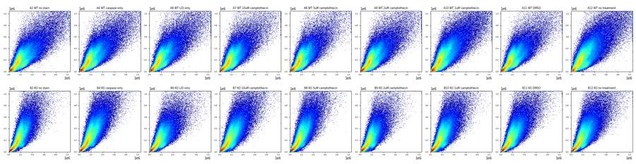
15
tool call · Read
{
"file_path": "/task/work/bl1_rl3.png"
}16
tool output
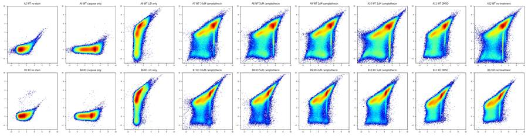
17
tool call · Read
{
"file_path": "/task/work/time.png"
}18
tool output
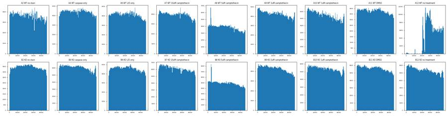
20
tool call · Read
{
"file_path": "/task/work/time_bl1.png"
}21
tool output
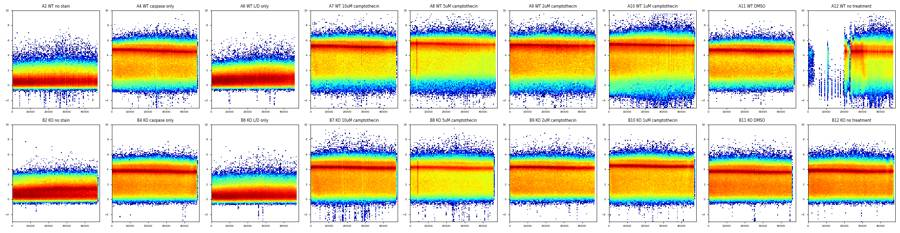
22
tool call · Read
{
"file_path": "/task/work/time_fsc.png"
}23
tool call · Read
{
"file_path": "/task/work/time_rl3.png"
}24
tool output
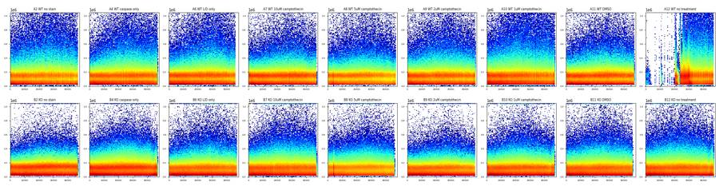
25
tool output
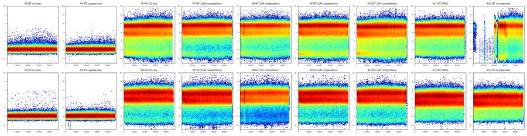
26
tool call · Read
{
"file_path": "/task/work/fsc_a_h.png"
}27
tool output
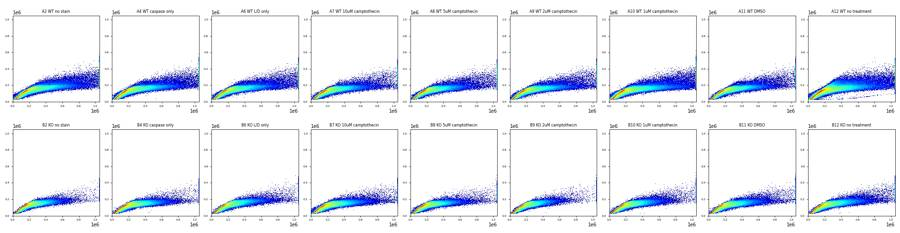
28
tool call · Read
{
"file_path": "/task/work/fsc_ssc_log.png"
}29
tool output
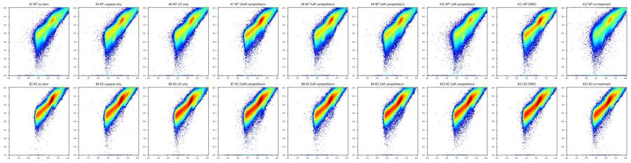
31
tool call · Bash
cd /task; cat > work/plot2.py <<'EOF'
import sys; sys.path.insert(0,'/task/work')
from load import *
import matplotlib; matplotlib.use('Agg'); import matplotlib.pyplot as plt
from matplotlib.colors import LogNorm
wells=['A2','A4','A6','A7','A11','B6','B7','B11']
fig,axs=plt.subplots(4,8,figsize=(32,16))
for j,w in enumerate(wells):
d=get(w)
lf=np.log10(np.clip(d['FSC-A'],1e3,None)); ls=np.log10(np.clip(d['SSC-A'],1e2,None))
b=np.arcsinh(d['BL1-A']/150); r=np.arcsinh(d['RL3-A']/150)
axs[0,j].hist2d(lf,ls,bins=250,range=[[4,6.05],[2.5,6.05]],norm=LogNorm(),cmap='jet'); axs[0,j].set_title(w+' logFSC-A vs logSSC-A')
axs[1,j].hist2d(lf,r,bins=250,range=[[4,6.05],[-3,10]],norm=LogNorm(),cmap='jet'); axs[1,j].set_title('logFSC vs asinh RL3')
axs[2,j].hist2d(lf,b,bins=250,range=[[4,6.05],[-3,10]],norm=LogNorm(),cmap='jet'); axs[2,j].set_title('logFSC vs asinh BL1')
axs[3,j].hist2d(ls,r,bins=250,range=[[2.5,6.05],[-3,10]],norm=LogNorm(),cmap='jet'); axs[3,j].set_title('logSSC vs asinh RL3')
plt.tight_layout(); plt.savefig('/task/work/detail.png',dpi=60)
EOF
python3 -I work/plot2.py32
tool call · Read
{
"file_path": "/task/work/detail.png"
}33
tool output
(Bash completed with no output)
34
tool output
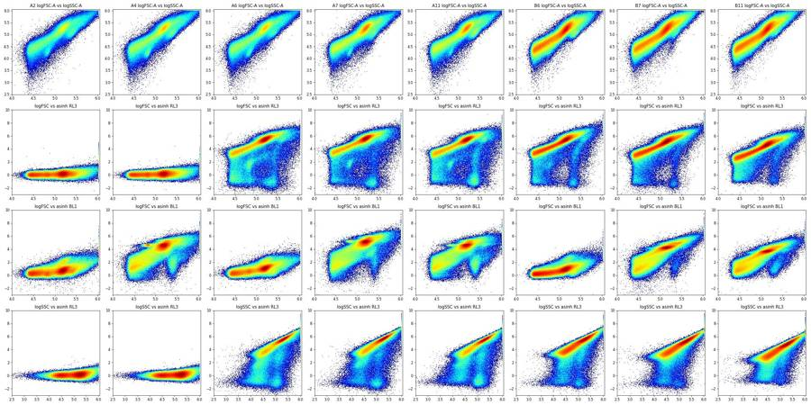
36
thinking
All 18 files are loaded and the first QC pass is done: well A12 shows a clog, and most stained-well events are Zombie NIR-positive, so viability looks low. I'm working out the gating hierarchy and the caspase readout next.
37
tool call · Bash
cd /task; cat > work/plot3.py <<'EOF'
import sys; sys.path.insert(0,'/task/work')
from load import *
import matplotlib; matplotlib.use('Agg'); import matplotlib.pyplot as plt
from matplotlib.colors import LogNorm
fig,axs=plt.subplots(4,9,figsize=(36,16))
for i,(_,r0) in enumerate(lay.iterrows()):
d=get(r0.well)
lf=np.log10(np.clip(d['FSC-A'],1e3,None)); ls=np.log10(np.clip(d['SSC-A'],1e2,None))
b=np.arcsinh(d['BL1-A']/150); r=np.arcsinh(d['RL3-A']/150)
neg = r<1.5
row=(i//9)*2; col=i%9
axs[row,col].hist2d(lf[neg],ls[neg],bins=200,range=[[4,6.05],[2.5,6.05]],norm=LogNorm(),cmap='jet'); axs[row,col].set_title(f"{r0.well} {r0['sample']} RL3neg n={neg.sum()} ({100*neg.mean():.1f}%)",fontsize=9)
axs[row+1,col].hist2d(lf[neg],b[neg],bins=200,range=[[4,6.05],[-3,10]],norm=LogNorm(),cmap='jet'); axs[row+1,col].set_title('RL3neg: logFSC vs asinh BL1',fontsize=9)
plt.tight_layout(); plt.savefig('/task/work/rl3neg.png',dpi=55)
EOF
python3 -I work/plot3.py38
tool call · Read
{
"file_path": "/task/work/rl3neg.png"
}39
tool output
(Bash completed with no output)
40
tool output
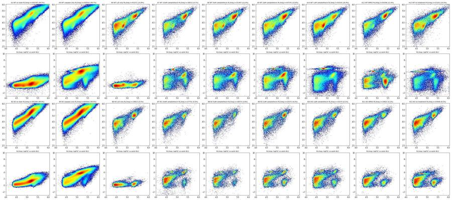
42
tool call · Bash
cd /task; cat > work/plot4.py <<'EOF'
import sys; sys.path.insert(0,'/task/work')
from load import *
import matplotlib; matplotlib.use('Agg'); import matplotlib.pyplot as plt
from matplotlib.colors import LogNorm
wells=['A2','A6','A7','A11','B6','B7','B11']
fig,axs=plt.subplots(5,7,figsize=(35,25))
for j,w in enumerate(wells):
d=get(w)
r=np.arcsinh(d['RL3-A']/150)
axs[0,j].hist2d(d['FSC-A'],d['SSC-A'],bins=250,range=[[0,6e5],[0,6e5]],norm=LogNorm(),cmap='jet'); axs[0,j].set_title(w+' FSC-A vs SSC-A (zoom, all)')
neg=r<1.5
axs[1,j].hist2d(d['FSC-A'][neg],d['SSC-A'][neg],bins=250,range=[[0,6e5],[0,6e5]],norm=LogNorm(),cmap='jet'); axs[1,j].set_title('RL3neg FSC-A vs SSC-A')
axs[2,j].hist2d(d['FSC-A'],d['FSC-H'],bins=250,range=[[0,6e5],[0,4e5]],norm=LogNorm(),cmap='jet'); axs[2,j].set_title('FSC-A vs FSC-H all')
axs[3,j].hist2d(d['FSC-A'][neg],d['FSC-H'][neg],bins=250,range=[[0,6e5],[0,4e5]],norm=LogNorm(),cmap='jet'); axs[3,j].set_title('FSC-A vs FSC-H RL3neg')
axs[4,j].hist2d(d['FSC-A'],d['FSC-W'],bins=250,range=[[0,6e5],[0,400]],norm=LogNorm(),cmap='jet'); axs[4,j].set_title('FSC-A vs FSC-W all')
plt.tight_layout(); plt.savefig('/task/work/detail2.png',dpi=50)
EOF
python3 -I work/plot4.py43
tool call · Read
{
"file_path": "/task/work/detail2.png"
}44
tool output
(Bash completed with no output)
45
tool output
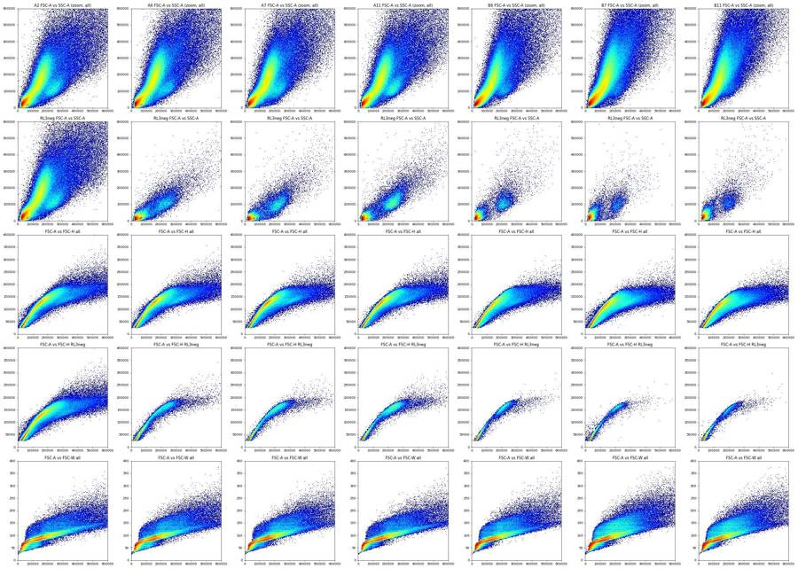
47
tool call · Bash
cd /task; cat > work/plot5.py <<'EOF'
import sys; sys.path.insert(0,'/task/work')
from load import *
import matplotlib; matplotlib.use('Agg'); import matplotlib.pyplot as plt
from matplotlib.colors import LogNorm
fig,axs=plt.subplots(6,9,figsize=(40,26))
for i,(_,r0) in enumerate(lay.iterrows()):
d=get(r0.well)
c=(d['FSC-A']>120e3)&(d['FSC-A']<700e3)&(d['SSC-A']>30e3)&(d['SSC-A']<800e3)
d=d[c]
b=np.arcsinh(d['BL1-A']/150); r=np.arcsinh(d['RL3-A']/150)
row=(i//9)*3; col=i%9
axs[row,col].hist2d(b,r,bins=200,range=[[-2,9],[-3,9]],norm=LogNorm(),cmap='jet'); axs[row,col].set_title(f"{r0.well} {r0['sample']} cells {100*c.mean():.1f}%",fontsize=10)
axs[row,col].axhline(2.0,color='k',lw=.5)
neg=r<2.0
axs[row+1,col].hist(b[neg],bins=150,range=(-2,9)); axs[row+1,col].set_title(f'BL1 in RL3neg cells n={neg.sum()} ({100*neg.mean():.1f}%)',fontsize=10)
for x in [2.5,2.75,3.0]: axs[row+1,col].axvline(x,color='r',lw=.5)
axs[row+2,col].hist2d(d['FSC-A'][neg],d['SSC-A'][neg],bins=150,range=[[0,7e5],[0,6e5]],norm=LogNorm(),cmap='jet')
plt.tight_layout(); plt.savefig('/task/work/cells_fl.png',dpi=50)
EOF
python3 -I work/plot5.py48
tool call · Read
{
"file_path": "/task/work/cells_fl.png"
}49
tool output
(Bash completed with no output)
50
tool output
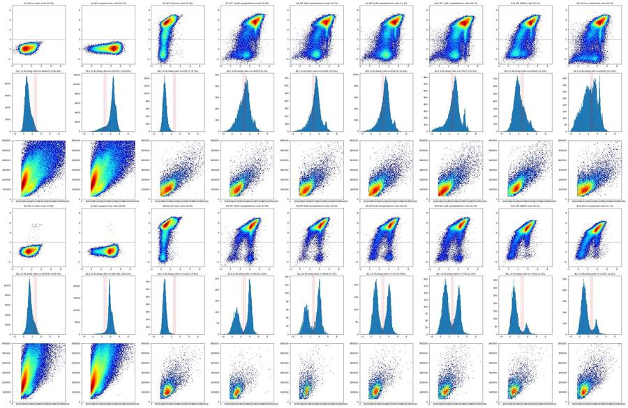
52
thinking
Live (Zombie-negative) cells are only about 2–13% of cell-sized events, with bimodal caspase signal and a visible camptothecin effect in both genotypes. I'm now fixing the gate boundaries and building them in FlowKit.
53
tool call · Bash
cd /task; cat > work/ridge.py <<'EOF'
import sys; sys.path.insert(0,'/task/work')
from load import *
for grp,wells in [('WT',['A6','A7','A8','A9','A10','A11']),('KO',['B6','B7','B8','B9','B10','B11','B12'])]:
d=pd.concat([get(w) for w in wells])
live=d[np.arcsinh(d['RL3-A']/150)<1.5]
for nm,x in [('all',d),('live',live)]:
print(grp,nm)
for lo in range(100,500,40):
s=x[(x['FSC-A']>=lo*1e3)&(x['FSC-A']<(lo+40)*1e3)]
rat=s['FSC-H']/s['FSC-A']
h=np.histogram(rat,bins=100,range=(0.2,1.2)); mode=h[1][np.argmax(h[0])]
print(f" A {lo}-{lo+40}k n={len(s):7d} H/A mode {mode:.2f} pct1 {np.percentile(rat,1):.2f} p5 {np.percentile(rat,5):.2f} p25 {np.percentile(rat,25):.2f} p50 {np.percentile(rat,50):.2f} p75 {np.percentile(rat,75):.2f} p95 {np.percentile(rat,95):.2f} p99 {np.percentile(rat,99):.2f} | W p5 {np.percentile(s['FSC-W'],5):.0f} p50 {np.percentile(s['FSC-W'],50):.0f} p95 {np.percentile(s['FSC-W'],95):.0f}")
EOF
python3 -I work/ridge.py54
tool output
WT all A 100-140k n= 364787 H/A mode 0.87 pct1 0.52 p5 0.67 p25 0.83 p50 0.87 p75 0.90 p95 0.95 p99 1.00 | W p5 70 p50 83 p95 97 A 140-180k n= 463581 H/A mode 0.81 pct1 0.51 p5 0.66 p25 0.77 p50 0.80 p75 0.83 p95 0.87 p99 0.89 | W p5 81 p50 89 p95 106 A 180-220k n= 240363 H/A mode 0.74 pct1 0.46 p5 0.55 p25 0.67 p50 0.72 p75 0.75 p95 0.79 p99 0.82 | W p5 87 p50 98 p95 140 A 220-260k n= 122263 H/A mode 0.66 pct1 0.41 p5 0.47 p25 0.57 p50 0.63 p75 0.67 p95 0.72 p99 0.75 | W p5 93 p50 106 p95 161 A 260-300k n= 77585 H/A mode 0.58 pct1 0.38 p5 0.42 p25 0.48 p50 0.55 p75 0.60 p95 0.66 p99 0.69 | W p5 99 p50 115 p95 175 A 300-340k n= 54822 H/A mode 0.42 pct1 0.35 p5 0.39 p25 0.43 p50 0.47 p75 0.53 p95 0.59 p99 0.65 | W p5 106 p50 131 p95 186 A 340-380k n= 39733 H/A mode 0.40 pct1 0.32 p5 0.35 p25 0.40 p50 0.43 p75 0.47 p95 0.54 p99 0.61 | W p5 112 p50 142 p95 200 A 380-420k n= 29081 H/A mode 0.38 pct1 0.30 p5 0.33 p25 0.37 p50 0.40 p75 0.44 p95 0.50 p99 0.59 | W p5 117 p50 150 p95 216 A 420-460k n= 22247 H/A mode 0.37 pct1 0.28 p5 0.30 p25 0.35 p50 0.38 p75 0.41 p95 0.48 p99 0.56 | W p5 122 p50 157 p95 230 A 460-500k n= 17043 H/A mode 0.35 pct1 0.26 p5 0.28 p25 0.33 p50 0.36 p75 0.39 p95 0.47 p99 0.54 | W p5 127 p50 165 p95 243 WT live A 100-140k n= 22033 H/A mode 0.90 pct1 0.51 p5 0.63 p25 0.81 p50 0.87 p75 0.91 p95 0.96 p99 1.04 | W p5 68 p50 83 p95 100 A 140-180k n= 25472 H/A mode 0.83 pct1 0.53 p5 0.67 p25 0.77 p50 0.82 p75 0.85 p95 0.89 p99 0.92 | W p5 77 p50 87 p95 100 A 180-220k n= 32167 H/A mode 0.75 pct1 0.56 p5 0.64 p25 0.70 p50 0.75 p75 0.78 p95 0.82 p99 0.84 | W p5 85 p50 93 p95 105 A 220-260k n= 28441 H/A mode 0.68 pct1 0.52 p5 0.58 p25 0.64 p50 0.68 p75 0.71 p95 0.74 p99 0.77 | W p5 91 p50 99 p95 112 A 260-300k n= 15600 H/A mode 0.62 pct1 0.47 p5 0.53 p25 0.58 p50 0.61 p75 0.64 p95 0.68 p99 0.71 | W p5 96 p50 107 p95 129 A 300-340k n= 6181 H/A mode 0.55 pct1 0.42 p5 0.46 p25 0.52 p50 0.55 p75 0.58 p95 0.63 p99 0.70 | W p5 102 p50 114 p95 158 A 340-380k n= 3332 H/A mode 0.48 pct1 0.37 p5 0.40 p25 0.46 p50 0.49 p75 0.53 p95 0.60 p99 0.68 | W p5 107 p50 120 p95 171 A 380-420k n= 2494 H/A mode 0.43 pct1 0.35 p5 0.38 p25 0.42 p50 0.45 p75 0.48 p95 0.56 p99 0.63 | W p5 112 p50 126 p95 181 A 420-460k n= 1917 H/A mode 0.42 pct1 0.34 p5 0.35 p25 0.39 p50 0.42 p75 0.44 p95 0.53 p99 0.60 | W p5 118 p50 132 p95 191 A 460-500k n= 1443 H/A mode 0.38 pct1 0.31 p5 0.33 p25 0.36 p50 0.39 p75 0.41 p95 0.49 p99 0.57 | W p5 122 p50 138 p95 202 KO all A 100-140k n= 622034 H/A mode 0.87 pct1 0.51 p5 0.65 p25 0.82 p50 0.86 p75 0.90 p95 0.93 p99 0.96 | W p5 76 p50 83 p95 104 A 140-180k n= 520546 H/A mode 0.81 pct1 0.49 p5 0.60 p25 0.74 p50 0.79 p75 0.83 p95 0.86 p99 0.88 | W p5 82 p50 90 p95 126 A 180-220k n= 246197 H/A mode 0.73 pct1 0.44 p5 0.50 p25 0.62 p50 0.69 p75 0.74 p95 0.78 p99 0.80 | W p5 88 p50 100 p95 152 A 220-260k n= 139307 H/A mode 0.62 pct1 0.39 p5 0.44 p25 0.52 p50 0.59 p75 0.65 p95 0.71 p99 0.75 | W p5 94 p50 109 p95 168 A 260-300k n= 88277 H/A mode 0.44 pct1 0.36 p5 0.40 p25 0.45 p50 0.51 p75 0.57 p95 0.64 p99 0.67 | W p5 102 p50 124 p95 181 A 300-340k n= 59579 H/A mode 0.42 pct1 0.33 p5 0.37 p25 0.41 p50 0.45 p75 0.50 p95 0.56 p99 0.60 | W p5 109 p50 138 p95 196 A 340-380k n= 40130 H/A mode 0.40 pct1 0.30 p5 0.34 p25 0.38 p50 0.42 p75 0.46 p95 0.52 p99 0.56 | W p5 115 p50 148 p95 214 A 380-420k n= 28106 H/A mode 0.38 pct1 0.28 p5 0.31 p25 0.36 p50 0.39 p75 0.43 p95 0.48 p99 0.53 | W p5 120 p50 157 p95 228 A 420-460k n= 19954 H/A mode 0.36 pct1 0.26 p5 0.29 p25 0.33 p50 0.37 p75 0.40 p95 0.45 p99 0.51 | W p5 126 p50 166 p95 243 A 460-500k n= 14253 H/A mode 0.34 pct1 0.25 p5 0.27 p25 0.31 p50 0.34 p75 0.38 p95 0.43 p99 0.49 | W p5 132 p50 176 p95 257 KO live A 100-140k n= 7167 H/A mode 0.89 pct1 0.52 p5 0.68 p25 0.82 p50 0.87 p75 0.90 p95 0.94 p99 0.97 | W p5 75 p50 83 p95 95 A 140-180k n= 7698 H/A mode 0.80 pct1 0.60 p5 0.68 p25 0.75 p50 0.79 p75 0.83 p95 0.87 p99 0.90 | W p5 81 p50 88 p95 100 A 180-220k n= 16667 H/A mode 0.76 pct1 0.60 p5 0.65 p25 0.72 p50 0.75 p75 0.78 p95 0.81 p99 0.83 | W p5 86 p50 93 p95 103 A 220-260k n= 12003 H/A mode 0.71 pct1 0.55 p5 0.61 p25 0.67 p50 0.70 p75 0.72 p95 0.75 p99 0.77 | W p5 91 p50 98 p95 109 A 260-300k n= 4076 H/A mode 0.63 pct1 0.47 p5 0.52 p25 0.59 p50 0.62 p75 0.65 p95 0.68 p99 0.70 | W p5 96 p50 105 p95 122 A 300-340k n= 1474 H/A mode 0.52 pct1 0.42 p5 0.45 p25 0.50 p50 0.53 p75 0.57 p95 0.62 p99 0.66 | W p5 103 p50 113 p95 137 A 340-380k n= 856 H/A mode 0.48 pct1 0.37 p5 0.41 p25 0.46 p50 0.49 p75 0.51 p95 0.56 p99 0.61 | W p5 109 p50 120 p95 149 A 380-420k n= 606 H/A mode 0.47 pct1 0.36 p5 0.39 p25 0.43 p50 0.46 p75 0.48 p95 0.53 p99 0.57 | W p5 113 p50 125 p95 168 A 420-460k n= 398 H/A mode 0.42 pct1 0.33 p5 0.36 p25 0.40 p50 0.43 p75 0.45 p95 0.49 p99 0.54 | W p5 118 p50 130 p95 186 A 460-500k n= 216 H/A mode 0.37 pct1 0.29 p5 0.34 p25 0.37 p50 0.40 p75 0.42 p95 0.49 p99 0.54 | W p5 121 p50 136 p95 198
56
tool call · Bash
cd /task; cat > work/thr.py <<'EOF'
import sys; sys.path.insert(0,'/task/work')
from load import *
from matplotlib.path import Path
import matplotlib; matplotlib.use('Agg'); import matplotlib.pyplot as plt
cells_poly=[(120e3,30e3),(120e3,330e3),(250e3,650e3),(500e3,800e3),(500e3,150e3),(300e3,60e3),(180e3,30e3)]
sing_poly=[(110e3,66),(110e3,97),(500e3,152),(510e3,152),(510e3,110),(500e3,110)]
sing_poly=[(110e3,66),(110e3,96),(500e3,150),(500e3,112)]
def gate(d):
c=Path(cells_poly).contains_points(d[['FSC-A','SSC-A']].values)
s=c&Path(sing_poly).contains_points(d[['FSC-A','FSC-W']].values)
return c,s
if __name__=='__main__':
fig,axs=plt.subplots(4,9,figsize=(40,17))
for i,(_,r0) in enumerate(lay.iterrows()):
d=get(r0.well); c,s=gate(d)
r=np.arcsinh(d['RL3-A']/150); b=np.arcsinh(d['BL1-A']/150)
row=(i//9)*2; col=i%9
axs[row,col].hist(r[s],bins=120,range=(-3,9)); axs[row,col].set_yscale('log'); axs[row,col].set_title(f"{r0.well} {r0['sample']} cells {100*c.mean():.1f}% sing {100*s.sum()/c.sum():.1f}%")
for x in [1.5,2,2.5]: axs[row,col].axvline(x,color='r',lw=.5)
for thr in [1.5,2.0,2.5]:
live=s&(r<thr)
print(r0.well, r0['sample'], 'thr',thr,'live n',live.sum(), f'{100*live.sum()/s.sum():.2f}%', ' casp+ at 2.5/2.75/3.0:', ' '.join(f'{100*(b[live]>t).mean():.1f}' for t in [2.5,2.75,3.0]))
live=s&(r<2.0)
axs[row+1,col].hist(b[live],bins=120,range=(-2,8));
for x in [2.5,2.75,3]: axs[row+1,col].axvline(x,color='r',lw=.5)
plt.tight_layout(); plt.savefig('/task/work/thr.png',dpi=50)
EOF
python3 -I work/thr.py57
tool call · Read
{
"file_path": "/task/work/thr.png"
}58
tool output
A2 WT no stain thr 1.5 live n 141477 100.00% casp+ at 2.5/2.75/3.0: 2.7 1.0 0.3 A2 WT no stain thr 2.0 live n 141479 100.00% casp+ at 2.5/2.75/3.0: 2.7 1.0 0.3 A2 WT no stain thr 2.5 live n 141480 100.00% casp+ at 2.5/2.75/3.0: 2.7 1.0 0.3 A4 WT caspase only thr 1.5 live n 168528 100.00% casp+ at 2.5/2.75/3.0: 90.5 88.9 87.2 A4 WT caspase only thr 2.0 live n 168531 100.00% casp+ at 2.5/2.75/3.0: 90.5 88.9 87.2 A4 WT caspase only thr 2.5 live n 168531 100.00% casp+ at 2.5/2.75/3.0: 90.5 88.9 87.2 A6 WT L/D only thr 1.5 live n 15985 9.96% casp+ at 2.5/2.75/3.0: 0.3 0.2 0.2 A6 WT L/D only thr 2.0 live n 17871 11.13% casp+ at 2.5/2.75/3.0: 0.3 0.2 0.2 A6 WT L/D only thr 2.5 live n 20219 12.60% casp+ at 2.5/2.75/3.0: 0.3 0.2 0.2 A7 WT 10uM camptothecin thr 1.5 live n 14270 8.73% casp+ at 2.5/2.75/3.0: 62.3 56.1 48.0 A7 WT 10uM camptothecin thr 2.0 live n 15644 9.57% casp+ at 2.5/2.75/3.0: 62.8 56.4 48.4 A7 WT 10uM camptothecin thr 2.5 live n 17232 10.54% casp+ at 2.5/2.75/3.0: 64.0 57.5 49.5 A8 WT 5uM camptothecin thr 1.5 live n 17803 10.96% casp+ at 2.5/2.75/3.0: 75.2 68.8 60.5 A8 WT 5uM camptothecin thr 2.0 live n 19584 12.06% casp+ at 2.5/2.75/3.0: 75.6 69.1 60.9 A8 WT 5uM camptothecin thr 2.5 live n 21635 13.32% casp+ at 2.5/2.75/3.0: 76.5 70.0 61.7 A9 WT 2uM camptothecin thr 1.5 live n 24192 14.27% casp+ at 2.5/2.75/3.0: 74.9 68.5 60.2 A9 WT 2uM camptothecin thr 2.0 live n 26213 15.46% casp+ at 2.5/2.75/3.0: 75.3 68.9 60.6 A9 WT 2uM camptothecin thr 2.5 live n 28533 16.83% casp+ at 2.5/2.75/3.0: 76.1 69.8 61.6 A10 WT 1uM camptothecin thr 1.5 live n 20470 10.87% casp+ at 2.5/2.75/3.0: 69.1 62.3 54.0 A10 WT 1uM camptothecin thr 2.0 live n 22800 12.10% casp+ at 2.5/2.75/3.0: 69.9 63.1 54.9 A10 WT 1uM camptothecin thr 2.5 live n 25624 13.60% casp+ at 2.5/2.75/3.0: 71.5 64.8 56.8 A11 WT DMSO thr 1.5 live n 20274 12.72% casp+ at 2.5/2.75/3.0: 30.8 25.6 21.1 A11 WT DMSO thr 2.0 live n 22396 14.05% casp+ at 2.5/2.75/3.0: 31.9 26.5 21.9 A11 WT DMSO thr 2.5 live n 24793 15.56% casp+ at 2.5/2.75/3.0: 33.7 28.0 23.2 A12 WT no treatment thr 1.5 live n 17332 10.99% casp+ at 2.5/2.75/3.0: 45.6 41.3 36.6 A12 WT no treatment thr 2.0 live n 19054 12.08% casp+ at 2.5/2.75/3.0: 46.6 42.1 37.4 A12 WT no treatment thr 2.5 live n 21283 13.49% casp+ at 2.5/2.75/3.0: 48.4 43.8 39.1 B2 KO no stain thr 1.5 live n 153494 99.96% casp+ at 2.5/2.75/3.0: 8.8 5.2 2.3 B2 KO no stain thr 2.0 live n 153507 99.97% casp+ at 2.5/2.75/3.0: 8.8 5.2 2.3 B2 KO no stain thr 2.5 live n 153511 99.97% casp+ at 2.5/2.75/3.0: 8.8 5.2 2.3 B4 KO caspase only thr 1.5 live n 205360 99.99% casp+ at 2.5/2.75/3.0: 95.7 94.8 93.1 B4 KO caspase only thr 2.0 live n 205371 100.00% casp+ at 2.5/2.75/3.0: 95.7 94.8 93.1 B4 KO caspase only thr 2.5 live n 205373 100.00% casp+ at 2.5/2.75/3.0: 95.7 94.8 93.1 B6 KO L/D only thr 1.5 live n 8535 6.10% casp+ at 2.5/2.75/3.0: 0.3 0.1 0.0 B6 KO L/D only thr 2.0 live n 9795 7.00% casp+ at 2.5/2.75/3.0: 0.3 0.1 0.0 B6 KO L/D only thr 2.5 live n 11332 8.09% casp+ at 2.5/2.75/3.0: 0.3 0.1 0.0 B7 KO 10uM camptothecin thr 1.5 live n 5171 2.91% casp+ at 2.5/2.75/3.0: 57.5 56.9 55.9 B7 KO 10uM camptothecin thr 2.0 live n 6029 3.40% casp+ at 2.5/2.75/3.0: 56.9 56.3 55.2 B7 KO 10uM camptothecin thr 2.5 live n 7064 3.98% casp+ at 2.5/2.75/3.0: 56.4 55.6 54.4 B8 KO 5uM camptothecin thr 1.5 live n 3016 1.85% casp+ at 2.5/2.75/3.0: 58.4 56.9 55.2 B8 KO 5uM camptothecin thr 2.0 live n 3522 2.16% casp+ at 2.5/2.75/3.0: 56.8 55.2 53.4 B8 KO 5uM camptothecin thr 2.5 live n 4133 2.53% casp+ at 2.5/2.75/3.0: 56.0 54.4 52.7 B9 KO 2uM camptothecin thr 1.5 live n 6313 4.93% casp+ at 2.5/2.75/3.0: 45.7 44.8 43.8 B9 KO 2uM camptothecin thr 2.0 live n 7263 5.67% casp+ at 2.5/2.75/3.0: 44.2 43.2 42.1 B9 KO 2uM camptothecin thr 2.5 live n 8444 6.60% casp+ at 2.5/2.75/3.0: 43.2 42.1 40.9 B10 KO 1uM camptothecin thr 1.5 live n 6351 3.83% casp+ at 2.5/2.75/3.0: 41.3 40.2 38.7 B10 KO 1uM camptothecin thr 2.0 live n 7408 4.47% casp+ at 2.5/2.75/3.0: 40.9 39.7 38.1 B10 KO 1uM camptothecin thr 2.5 live n 8616 5.20% casp+ at 2.5/2.75/3.0: 41.4 39.9 38.1 B11 KO DMSO thr 1.5 live n 5574 3.57% casp+ at 2.5/2.75/3.0: 12.0 11.3 10.6 B11 KO DMSO thr 2.0 live n 6849 4.39% casp+ at 2.5/2.75/3.0: 14.2 13.4 12.7 B11 KO DMSO thr 2.5 live n 8401 5.39% casp+ at 2.5/2.75/3.0: 16.9 16.0 15.3 B12 KO no treatment thr 1.5 live n 9030 5.53% casp+ at 2.5/2.75/3.0: 13.2 12.5 11.8 B12 KO no treatment thr 2.0 live n 10979 6.72% casp+ at 2.5/2.75/3.0: 15.7 14.8 13.9 B12 KO no treatment thr 2.5 live n 13096 8.02% casp+ at 2.5/2.75/3.0: 18.4 17.3 16.2
59
tool output
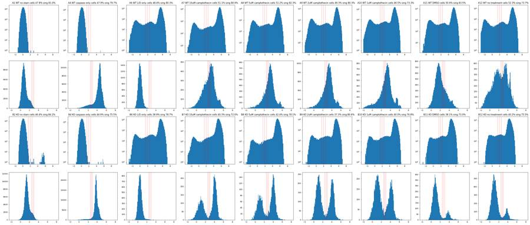
61
tool call · Bash
cd /task; cat > work/qc2.py <<'EOF'
import sys; sys.path.insert(0,'/task/work')
from load import *
from thr import gate
for _,r0 in lay.iterrows():
d=get(r0.well); t=d['Time'].values/1000.0
dur=t.max()
h,_=np.histogram(t,bins=np.arange(0,np.ceil(dur)+1,1.0))
h=h[:-1] if len(h)>47 else h
med=np.median(h)
low=(h<0.5*med).sum(); high=(h>1.5*med).sum()
first20=(t<20).mean()*100
c,s=gate(d)
r=d['RL3-A'].values; b=d['BL1-A'].values
# drift: median BL1/RL3/FSC first vs second half
half=t<dur/2
def m(x,mask): return np.median(x[mask])
satF=(d['FSC-A']>=1048575).mean()*100; satS=(d['SSC-A']>=1048575).mean()*100; satB=(d['BL1-A']>=1048575).mean()*100; satR=(d['RL3-A']>=1048575).mean()*100
print(f"{r0.well:4s} n={len(d):6d} dur={dur:.1f}s rate med={med:.0f}/s min={h.min()} max={h.max()} bins<50%med={low} >150%med={high} first20s={first20:.1f}% | BL1 med h1/h2 {m(b,half):.0f}/{m(b,~half):.0f} RL3 {m(r,half):.0f}/{m(r,~half):.0f} FSC {m(d['FSC-A'].values,half):.0f}/{m(d['FSC-A'].values,~half):.0f} | sat% FSC {satF:.2f} SSC {satS:.2f} BL1 {satB:.3f} RL3 {satR:.3f} | RL3>2000: {(r>2000).sum()} BL1>3000: {(b>3000).sum()}")
if r0.well in('A8','B8','A2','A12'):
print(' per-sec counts:',h.tolist())
EOF
python3 -I work/qc2.py62
tool output
A2 n=365736 dur=47.0s rate med=7948/s min=6514 max=8559 bins<50%med=0 >150%med=0 first20s=44.2% | BL1 med h1/h2 106/117 RL3 17/18 FSC 125086/137630 | sat% FSC 1.27 SSC 1.60 BL1 0.000 RL3 0.000 | RL3>2000: 156 BL1>3000: 1545 per-sec counts: [7922, 8559, 8128, 8236, 8126, 7978, 8095, 8240, 8300, 8442, 8323, 8036, 8213, 7768, 8161, 7901, 7733, 7732, 7957, 7764, 8016, 8074, 8173, 8172, 7648, 7320, 8300, 8335, 8050, 7739, 8009, 7145, 8169, 7948, 7205, 6966, 7845, 7181, 7339, 7158, 7481, 7226, 7196, 7127, 6544, 6514, 7108] A4 n=440820 dur=47.1s rate med=9483/s min=8227 max=10043 bins<50%med=0 >150%med=0 first20s=42.9% | BL1 med h1/h2 3456/3825 RL3 16/18 FSC 118206/134566 | sat% FSC 0.69 SSC 0.96 BL1 0.000 RL3 0.000 | RL3>2000: 27 BL1>3000: 235198 A6 n=412724 dur=46.1s rate med=9114/s min=545 max=9741 bins<50%med=1 >150%med=0 first20s=44.4% | BL1 med h1/h2 138/171 RL3 6622/8922 FSC 120638/135833 | sat% FSC 0.78 SSC 1.14 BL1 0.000 RL3 0.002 | RL3>2000: 299775 BL1>3000: 996 A7 n=395514 dur=47.1s rate med=8532/s min=7026 max=9212 bins<50%med=0 >150%med=0 first20s=43.8% | BL1 med h1/h2 7039/7188 RL3 9529/11253 FSC 125256/135539 | sat% FSC 0.34 SSC 0.59 BL1 0.000 RL3 0.000 | RL3>2000: 320329 BL1>3000: 250059 A8 n=384992 dur=46.9s rate med=8485/s min=6222 max=12591 bins<50%med=0 >150%med=0 first20s=45.8% | BL1 med h1/h2 8667/8555 RL3 8324/9501 FSC 127759/135468 | sat% FSC 0.49 SSC 0.80 BL1 0.001 RL3 0.001 | RL3>2000: 291642 BL1>3000: 251520 per-sec counts: [8458, 8729, 8875, 12591, 8580, 8636, 8712, 8505, 8619, 8628, 8429, 8452, 8316, 8333, 8639, 8795, 8704, 8778, 8783, 8703, 8533, 8671, 8689, 8543, 8526, 8618, 8734, 8503, 8485, 8443, 8080, 8142, 7874, 7506, 7591, 7605, 7613, 7672, 7099, 6874, 6702, 6840, 6965, 6893, 6222, 6679, 6625] A9 n=428254 dur=47.2s rate med=9108/s min=7638 max=10328 bins<50%med=0 >150%med=0 first20s=44.4% | BL1 med h1/h2 5977/6165 RL3 7228/8270 FSC 124592/133318 | sat% FSC 0.60 SSC 0.87 BL1 0.000 RL3 0.002 | RL3>2000: 313896 BL1>3000: 258892 A10 n=552590 dur=47.2s rate med=11801/s min=9391 max=13883 bins<50%med=0 >150%med=0 first20s=45.9% | BL1 med h1/h2 7259/7600 RL3 5619/6992 FSC 121995/131971 | sat% FSC 1.27 SSC 1.78 BL1 0.005 RL3 0.001 | RL3>2000: 379308 BL1>3000: 347944 A11 n=377220 dur=47.1s rate med=8127/s min=6752 max=8473 bins<50%med=0 >150%med=0 first20s=43.4% | BL1 med h1/h2 3586/3804 RL3 6970/8036 FSC 124814/136724 | sat% FSC 0.35 SSC 0.60 BL1 0.000 RL3 0.000 | RL3>2000: 278687 BL1>3000: 200435 A12 n=409074 dur=46.9s rate med=12583/s min=0 max=22923 bins<50%med=21 >150%med=7 first20s=0.7% | BL1 med h1/h2 4322/5325 RL3 9874/11865 FSC 120002/146036 | sat% FSC 1.42 SSC 2.03 BL1 0.000 RL3 0.001 | RL3>2000: 309471 BL1>3000: 260026 per-sec counts: [372, 447, 217, 48, 1, 0, 47, 54, 0, 50, 757, 500, 3, 71, 37, 28, 55, 0, 63, 74, 13660, 12763, 5468, 11100, 20605, 19646, 22320, 21113, 19989, 22923, 21341, 16971, 14588, 13514, 12671, 12611, 13756, 12583, 12837, 12217, 13143, 13898, 13626, 12785, 13113, 13577, 13432] B2 n=392795 dur=47.1s rate med=8365/s min=7065 max=8910 bins<50%med=0 >150%med=0 first20s=42.8% | BL1 med h1/h2 171/211 RL3 17/18 FSC 111518/123679 | sat% FSC 0.04 SSC 0.45 BL1 0.000 RL3 0.000 | RL3>2000: 113 BL1>3000: 824 B4 n=605670 dur=47.1s rate med=13169/s min=10957 max=13619 bins<50%med=0 >150%med=0 first20s=44.0% | BL1 med h1/h2 2134/2133 RL3 17/18 FSC 112052/119040 | sat% FSC 0.04 SSC 0.54 BL1 0.000 RL3 0.000 | RL3>2000: 24 BL1>3000: 218792 B6 n=457465 dur=47.0s rate med=9902/s min=8155 max=10556 bins<50%med=0 >150%med=0 first20s=43.3% | BL1 med h1/h2 99/115 RL3 6853/7626 FSC 91531/101852 | sat% FSC 0.09 SSC 0.43 BL1 0.000 RL3 0.001 | RL3>2000: 382487 BL1>3000: 714 B7 n=612174 dur=47.1s rate med=12993/s min=10935 max=14304 bins<50%med=0 >150%med=0 first20s=44.5% | BL1 med h1/h2 2821/3086 RL3 6295/7212 FSC 98480/108703 | sat% FSC 0.10 SSC 0.61 BL1 0.000 RL3 0.005 | RL3>2000: 495168 BL1>3000: 304248 B8 n=493435 dur=46.1s rate med=10804/s min=929 max=15521 bins<50%med=1 >150%med=0 first20s=45.9% | BL1 med h1/h2 2863/3078 RL3 7964/9082 FSC 104087/114346 | sat% FSC 0.09 SSC 0.68 BL1 0.000 RL3 0.004 | RL3>2000: 419745 BL1>3000: 245822 per-sec counts: [11213, 11478, 11329, 12653, 15521, 11021, 11076, 11264, 11228, 11243, 11246, 11102, 10961, 10804, 10595, 10384, 10860, 10880, 10796, 10769, 10945, 10828, 10868, 10543, 10877, 10907, 10974, 10652, 11088, 10975, 10670, 10638, 10623, 10172, 10196, 10020, 10178, 9939, 10007, 9492, 9231, 9348, 9156, 9858, 9205, 8693, 929] B9 n=425772 dur=47.0s rate med=9332/s min=7427 max=9932 bins<50%med=0 >150%med=0 first20s=44.9% | BL1 med h1/h2 2072/2149 RL3 6008/6522 FSC 88568/97265 | sat% FSC 0.06 SSC 0.35 BL1 0.000 RL3 0.002 | RL3>2000: 347320 BL1>3000: 188827 B10 n=539106 dur=47.1s rate med=11626/s min=9447 max=12446 bins<50%med=0 >150%med=0 first20s=44.3% | BL1 med h1/h2 3073/3148 RL3 7010/7516 FSC 98528/105198 | sat% FSC 0.08 SSC 0.53 BL1 0.000 RL3 0.001 | RL3>2000: 442030 BL1>3000: 272494 B11 n=561171 dur=46.1s rate med=12408/s min=1149 max=13143 bins<50%med=1 >150%med=0 first20s=45.0% | BL1 med h1/h2 1443/1503 RL3 3711/4038 FSC 93830/100956 | sat% FSC 0.09 SSC 0.55 BL1 0.000 RL3 0.000 | RL3>2000: 372571 BL1>3000: 159920 B12 n=538223 dur=47.2s rate med=11432/s min=9237 max=12807 bins<50%med=0 >150%med=0 first20s=44.7% | BL1 med h1/h2 1665/1662 RL3 3169/3379 FSC 100474/106555 | sat% FSC 0.14 SSC 0.75 BL1 0.000 RL3 0.000 | RL3>2000: 329232 BL1>3000: 186431
64
thinking
QC is quantified: A12 is confirmed as a clog, with 0.7% of its events in the first 20 seconds and then a burst to about 23k events/s, and no other well needs excluding. I'm now building the FlowKit gating strategy and writing the deliverables.
65
tool call · Bash
cd /task; cat > work/build.py <<'EOF'
import flowkit as fk, pandas as pd, numpy as np, os
OUT='/task/outputs'
lay=pd.read_csv('/task/inputs/plate_layout.csv')
gs=fk.GatingStrategy()
U='uncompensated'
def D(ch,**k): return fk.Dimension(ch,compensation_ref=U,**k)
cells_poly=[(120e3,30e3),(120e3,330e3),(250e3,650e3),(500e3,800e3),(500e3,150e3),(300e3,60e3),(180e3,30e3)]
sing_poly=[(110e3,66),(110e3,96),(500e3,150),(500e3,112)]
gs.add_gate(fk.gates.PolygonGate('cells',[D('FSC-A'),D('SSC-A')],cells_poly),gate_path=('root',))
gs.add_gate(fk.gates.PolygonGate('singlets',[D('FSC-A'),D('FSC-W')],sing_poly),gate_path=('root','cells'))
gs.add_gate(fk.gates.RectangleGate('live',[D('RL3-A',range_max=500.0)]),gate_path=('root','cells','singlets'))
gs.add_gate(fk.gates.RectangleGate('caspase_pos',[D('BL1-A',range_min=1200.0)]),gate_path=('root','cells','singlets','live'))
with open(OUT+'/gates.xml','wb') as f: fk.export_gatingml(gs,f)
gs2=fk.parse_gating_xml(OUT+'/gates.xml')
print(gs2.get_gate_ids())
roles={'cells':'cells','singlets':'singlets','live':'live','caspase_pos':'marker_positive'}
rows=[]
for _,r in lay.iterrows():
s=fk.Sample('/task/inputs/raw/'+r.file)
res=gs2.gate_sample(s)
rep=res.report
n_all=s.event_count
rows.append(dict(file=r.file,well=r.well,population='all_events',role='other',parent='none',count=int(n_all),pct_of_parent=''))
cnt={'all_events':n_all}
for g,parent in [('cells','all_events'),('singlets','cells'),('live','singlets'),('caspase_pos','live')]:
c=int(res.get_gate_membership(g).sum())
rc=int(rep.loc[rep.gate_name==g,'count'].iloc[0]); assert c==rc,(c,rc)
cnt[g]=c
rows.append(dict(file=r.file,well=r.well,population=g,role=roles[g],parent=parent,count=c,pct_of_parent=round(100*c/cnt[parent],4) if cnt[parent] else ''))
print(r.well,cnt)
pd.DataFrame(rows)[['file','well','population','role','parent','count','pct_of_parent']].to_csv(OUT+'/counts.csv',index=False)
EOF
python3 work/build.py 2>&1 | grep -v Warning66
tool output
[('cells', ('root',)), ('singlets', ('root', 'cells')), ('live', ('root', 'cells', 'singlets')), ('caspase_pos', ('root', 'cells', 'singlets', 'live'))]
A2 {'all_events': 365736, 'cells': 174737, 'singlets': 141483, 'live': 141481, 'caspase_pos': 1269}
A4 {'all_events': 440820, 'cells': 211361, 'singlets': 168534, 'live': 168533, 'caspase_pos': 149565}
A6 {'all_events': 412724, 'cells': 199823, 'singlets': 160509, 'live': 17513, 'caspase_pos': 35}
A7 {'all_events': 395514, 'cells': 202091, 'singlets': 163540, 'live': 15402, 'caspase_pos': 8555}
A8 {'all_events': 384992, 'cells': 197236, 'singlets': 162413, 'live': 19276, 'caspase_pos': 13164}
A9 {'all_events': 428254, 'cells': 211157, 'singlets': 169519, 'live': 25870, 'caspase_pos': 17607}
A10 {'all_events': 552590, 'cells': 257114, 'singlets': 188360, 'live': 22394, 'caspase_pos': 13884}
A11 {'all_events': 377220, 'cells': 190960, 'singlets': 159378, 'live': 22016, 'caspase_pos': 5725}
A12 {'all_events': 409074, 'cells': 214050, 'singlets': 157757, 'live': 18696, 'caspase_pos': 7754}
B2 {'all_events': 392795, 'cells': 182375, 'singlets': 153559, 'live': 153508, 'caspase_pos': 7399}
B4 {'all_events': 605670, 'cells': 272183, 'singlets': 205384, 'live': 205376, 'caspase_pos': 194357}
B6 {'all_events': 457465, 'cells': 177797, 'singlets': 139990, 'live': 9545, 'caspase_pos': 13}
B7 {'all_events': 612174, 'cells': 246522, 'singlets': 177579, 'live': 5877, 'caspase_pos': 3307}
B8 {'all_events': 493435, 'cells': 209214, 'singlets': 163417, 'live': 3441, 'caspase_pos': 1910}
B9 {'all_events': 425772, 'cells': 158746, 'singlets': 128000, 'live': 7087, 'caspase_pos': 3068}
B10 {'all_events': 539106, 'cells': 215620, 'singlets': 165638, 'live': 7220, 'caspase_pos': 2854}
B11 {'all_events': 561171, 'cells': 213686, 'singlets': 155950, 'live': 6615, 'caspase_pos': 858}
B12 {'all_events': 538223, 'cells': 216435, 'singlets': 163373, 'live': 10642, 'caspase_pos': 1501}68
tool call · Bash
cd /task; cat > work/gateplot.py <<'EOF'
import sys; sys.path.insert(0,'/task/work')
from load import *
from matplotlib.path import Path
import matplotlib; matplotlib.use('Agg'); import matplotlib.pyplot as plt
from matplotlib.colors import LogNorm
cells_poly=[(120e3,30e3),(120e3,330e3),(250e3,650e3),(500e3,800e3),(500e3,150e3),(300e3,60e3),(180e3,30e3)]
sing_poly=[(110e3,66),(110e3,96),(500e3,150),(500e3,112)]
wells=['A6','A11','A8','B6','B11','B8']
fig,axs=plt.subplots(5,6,figsize=(30,25))
for j,w in enumerate(wells):
d=get(w)
c=Path(cells_poly).contains_points(d[['FSC-A','SSC-A']].values)
s=c&Path(sing_poly).contains_points(d[['FSC-A','FSC-W']].values)
live=s&(d['RL3-A']<500)
ax=axs[0,j]; ax.hist2d(d['FSC-A'],d['SSC-A'],bins=250,range=[[0,8e5],[0,9e5]],norm=LogNorm(),cmap='jet'); p=np.array(cells_poly+[cells_poly[0]]); ax.plot(p[:,0],p[:,1],'k-'); ax.set_title(f'{w} all: cells {100*c.mean():.1f}%')
ax=axs[1,j]; ax.hist2d(d['FSC-A'][c],d['FSC-W'][c],bins=[250,200],range=[[0,6e5],[40,240]],norm=LogNorm(),cmap='jet'); p=np.array(sing_poly+[sing_poly[0]]); ax.plot(p[:,0],p[:,1],'k-'); ax.set_title(f'cells: singlets {100*s.sum()/c.sum():.1f}%')
ax=axs[2,j]; ax.hist2d(np.arcsinh(d['BL1-A'][s]/150),np.arcsinh(d['RL3-A'][s]/150),bins=200,range=[[-2,9],[-3,9]],norm=LogNorm(),cmap='jet'); ax.axhline(np.arcsinh(500/150),color='k'); ax.axvline(np.arcsinh(1200/150),color='k',ls='--'); ax.set_title(f'singlets: live {100*live.sum()/s.sum():.1f}%')
ax=axs[3,j]; ax.hist2d(d['FSC-A'][live],np.arcsinh(d['BL1-A'][live]/150),bins=150,range=[[1e5,5e5],[-2,8]],norm=LogNorm(),cmap='jet'); ax.axhline(np.arcsinh(1200/150),color='k'); ax.set_title(f"live: casp+ {100*(d['BL1-A'][live]>=1200).mean():.1f}%")
ax=axs[4,j]; ax.hist2d(d['FSC-A'][live],d['SSC-A'][live],bins=150,range=[[0,8e5],[0,9e5]],norm=LogNorm(),cmap='jet'); p=np.array(cells_poly+[cells_poly[0]]); ax.plot(p[:,0],p[:,1],'k-')
plt.tight_layout(); plt.savefig('/task/work/gates_check.png',dpi=50)
EOF
python3 -I work/gateplot.py69
tool call · Read
{
"file_path": "/task/work/gates_check.png"
}70
tool output
(Bash completed with no output)
71
tool output
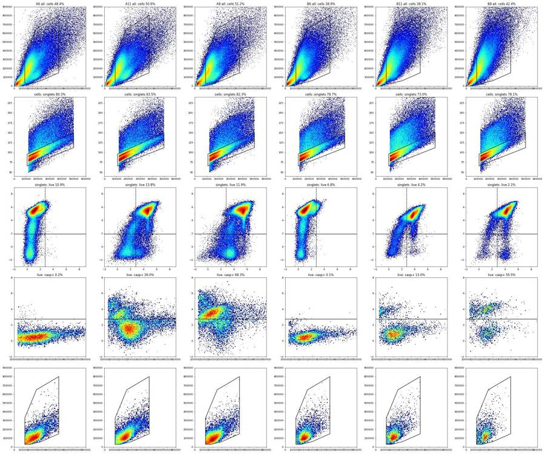
73
tool call · Skill
{
"skill": "dataviz"
}74
tool output
Launching skill: dataviz
75
tool call · Bash
cd /task; cat > work/alt.py <<'EOF'
import sys; sys.path.insert(0,'/task/work')
from load import *
from matplotlib.path import Path
cells_poly=[(120e3,30e3),(120e3,330e3),(250e3,650e3),(500e3,800e3),(500e3,150e3),(300e3,60e3),(180e3,30e3)]
sing_poly=[(110e3,66),(110e3,96),(500e3,150),(500e3,112)]
print('well sample | live%sing | casp+%live (thr 900/1200/1600) | casp+%singlets | casp+live %singlets | medBL1 live | medBL1 dead | casp+%live with RL3<320 / <900 | live cells/uL')
for _,r0 in lay.iterrows():
d=get(r0.well)
c=Path(cells_poly).contains_points(d[['FSC-A','SSC-A']].values)
s=c&Path(sing_poly).contains_points(d[['FSC-A','FSC-W']].values)
b=d['BL1-A'].values; r=d['RL3-A'].values
live=s&(r<500); dead=s&(r>=500)
f=lambda m,t=1200: 100*(b[m]>=t).mean()
print(f"{r0.well:4s}{r0['sample']:22s} | {100*live.sum()/s.sum():5.1f} | {f(live,900):5.1f} {f(live):5.1f} {f(live,1600):5.1f} | {f(s):5.1f} | {100*(live&(b>=1200)).sum()/s.sum():5.2f} | {np.median(b[live]):6.0f} | {np.median(b[dead]) if dead.sum()>100 else float('nan'):6.0f} | {f(s&(r<320)):5.1f} {f(s&(r<900)):5.1f} | {live.sum()/157:.0f}")
EOF
python3 -I work/alt.py76
tool output
well sample | live%sing | casp+%live (thr 900/1200/1600) | casp+%singlets | casp+live %singlets | medBL1 live | medBL1 dead | casp+%live with RL3<320 / <900 | live cells/uL A2 WT no stain | 100.0 | 2.8 0.9 0.2 | 0.9 | 0.90 | 142 | nan | 0.9 0.9 | 901 A4 WT caspase only | 100.0 | 90.6 88.7 86.7 | 88.7 | 88.74 | 6576 | nan | 88.7 88.7 | 1073 A6 WT L/D only | 10.9 | 0.3 0.2 0.2 | 0.9 | 0.02 | 80 | 227 | 0.2 0.2 | 112 A7 WT 10uM camptothecin | 9.4 | 62.8 55.5 46.1 | 94.6 | 5.23 | 1427 | 12336 | 55.3 56.7 | 98 A8 WT 5uM camptothecin | 11.9 | 75.7 68.3 58.5 | 95.4 | 8.11 | 1946 | 16093 | 68.1 69.2 | 123 A9 WT 2uM camptothecin | 15.3 | 75.3 68.1 58.0 | 94.1 | 10.39 | 1933 | 13142 | 67.7 69.0 | 165 A10 WT 1uM camptothecin | 11.9 | 69.9 62.0 52.5 | 94.3 | 7.37 | 1704 | 13495 | 61.4 63.9 | 143 A11 WT DMSO | 13.8 | 31.9 26.0 20.7 | 86.5 | 3.59 | 494 | 7432 | 25.2 27.5 | 140 A12 WT no treatment | 11.9 | 46.5 41.5 36.1 | 90.3 | 4.92 | 745 | 6831 | 40.8 43.3 | 119 B2 KO no stain | 100.0 | 8.9 4.8 1.8 | 4.8 | 4.82 | 299 | nan | 4.8 4.8 | 978 B4 KO caspase only | 100.0 | 95.8 94.6 92.5 | 94.6 | 94.63 | 3328 | nan | 94.6 94.6 | 1308 B6 KO L/D only | 6.8 | 0.4 0.1 0.0 | 2.0 | 0.01 | 79 | 195 | 0.1 0.1 | 61 B7 KO 10uM camptothecin | 3.3 | 57.0 56.3 54.8 | 96.4 | 1.86 | 2531 | 5518 | 56.9 55.5 | 37 B8 KO 5uM camptothecin | 2.1 | 57.1 55.5 53.1 | 97.0 | 1.17 | 2121 | 5214 | 56.9 54.4 | 22 B9 KO 2uM camptothecin | 5.5 | 44.3 43.3 42.0 | 93.3 | 2.40 | 439 | 5397 | 44.7 42.0 | 45 B10 KO 1uM camptothecin | 4.4 | 41.0 39.5 37.5 | 94.4 | 1.72 | 415 | 6452 | 40.1 39.7 | 46 B11 KO DMSO | 4.2 | 13.8 13.0 12.2 | 91.9 | 0.55 | 182 | 3204 | 11.2 15.9 | 42 B12 KO no treatment | 6.5 | 15.2 14.1 13.1 | 89.9 | 0.92 | 208 | 3511 | 12.4 17.1 | 68
78
tool call · Bash
cd /tmp/claude-0/bundled-skills/2.1.322/63f60cb4de19356fbb8b145676d19098/dataviz; sed -n 1,80p references/palette.md | cut -c1-220; grep -n -i "static\|matplotlib\|png" references/*.md | head -20
79
tool output
# Reference palette
This is the **reference instance** of the data-viz method: every parameter the
method needs, filled in with a validated default palette. The rest of the skill
is system-agnostic - **to target your brand, substitute this file's values** and
re-run the validator. Nothing else changes.
## How to use these values
Everything below is plain hex. In an HTML chart, **define the slots you use as
CSS custom properties in a local `<style>` block** at the top of the file, then
reference them by role throughout - so the light/dark values swap in one place,
and the chart body is written against roles rather than raw hex:
```css
.viz-root {
color-scheme: light;
--surface-1: #fcfcfb; /* chart surface */
--text-primary: #0b0b0b;
--text-secondary: #52514e;
--series-1: #2a78d6; /* categorical slot 1 */
/* ...only the roles this chart uses */
}
@media (prefers-color-scheme: dark) {
:root:where(:not([data-theme="light"])) .viz-root {
color-scheme: dark;
--surface-1: #1a1a19;
--text-primary: #f0efec;
--text-secondary: #c3c2b7;
--series-1: #3987e5;
}
}
:root[data-theme="dark"] .viz-root {
color-scheme: dark;
--surface-1: #1a1a19;
--text-primary: #f0efec;
--text-secondary: #c3c2b7;
--series-1: #3987e5;
}
```
Declare the dark values under both scopes as above - the media query covers
the OS setting; the `data-theme` scope covers the viewer's theme toggle,
which must win both ways (the `:not(...)` guard lets a light stamp beat
OS-dark; `:where()` keeps the media block below the toggle scope).
## Categorical palette
Both modes are selected. The dark column is the same eight hues stepped for the
dark surface, not a separate palette:
| Slot | Hue | Light | Dark |
|------|-----|-------|------|
| 1 | blue | `#2a78d6` | `#3987e5` |
| 2 | orange | `#eb6834` | `#d95926` |
| 3 | aqua | `#1baf7a` | `#199e70` |
| 4 | yellow | `#eda100` | `#c98500` |
| 5 | magenta | `#e87ba4` | `#d55181` |
| 6 | green | `#008300` | `#008300` |
| 7 | violet | `#6250d6` | `#9085e9` |
| 8 | red | `#e34948` | `#e66767` |
This order passes every hard gate in both modes on the default *adjacent*
pairlist (stacks, bars, lines): worst adjacent CVD Delta E 9.1 light / 8.4 dark
(OKLab ×100, >=8 target), worst adjacent normal-vision Delta E 19.6 light / 19.3
dark (>=15 floor). Under `--pairs all` (scatter, bubble, choropleth, small
multiples) the full eight cannot clear the floors - with all 28 pairs in
play no ordering can (the pairlist no longer depends on order), and
re-stepping is off the table by the documented-palette rule - so those
chart forms carry a series cap: **the first three slots validate all-pairs
in both modes** (worst pair CVD Delta E 9.2 light / 9.4 dark, normal-vision 24.0
light / 20.9 dark - clear of the CVD warn band). Past three, fold to "Other" or
facet: the fourth slot puts yellow and orange on screen
together, and that pair fails the all-pairs floors (normal-vision 13.7
light; CVD 4.8 dark). Three light-mode slots (magenta, yellow, aqua)
sit below 3:1 contrast on the light surface: the **relief rule** applies (ship
visible direct labels or the table view). The dark steps were chosen for the
dark band (OKLCH L ~ 0.48-0.67, >= 3:1 on the dark surface) and validated as a
set. (Ordering history: adopted July 2026 for its more harmonious opening -
the same eight hues and steps as its predecessor, re-ordered, zero hex
references/interaction.md:5:Design it with the same care as the static render.
Shell cwd was reset to /task81
agent
Status: gates are built and counts exported; I'm now writing the remaining deliverables (flags, condition summary, figure, report, answer.json) and then running a consistency check.
82
tool call · Bash
cd /task; cat > work/final.py <<'EOF'
import sys, json; sys.path.insert(0,'/task/work')
from load import *
import flowio
from matplotlib.path import Path
import matplotlib; matplotlib.use('Agg'); import matplotlib.pyplot as plt
OUT='/task/outputs'
cnt=pd.read_csv(OUT+'/counts.csv')
piv=cnt.pivot(index='well',columns='population',values='count')
piv['casp_live']=100*piv.caspase_pos/piv.live
piv['viab']=100*piv.live/piv.singlets
L=lay.set_index('well')
# ---------- QC numbers / flags
cells_poly=[(120e3,30e3),(120e3,330e3),(250e3,650e3),(500e3,800e3),(500e3,150e3),(300e3,60e3),(180e3,30e3)]
sing_poly=[(110e3,66),(110e3,96),(500e3,150),(500e3,112)]
flags=[]; qc={}
for _,r0 in lay.iterrows():
w=r0.well; d=get(w); t=d['Time'].values/1000.
fd=flowio.FlowData('/task/inputs/raw/'+r0.file); coinc=int(fd.text['#coincidentcount'])
h,_=np.histogram(t,bins=np.arange(0,47,1.0)) # 46 complete 1-s bins
med=np.median(h); first20=100*(t<20).mean()
satF=100*(d['FSC-A']>=1048575).mean(); satB=100*(d['BL1-A']>=1048575).mean()
c=Path(cells_poly).contains_points(d[['FSC-A','SSC-A']].values)
s=c&Path(sing_poly).contains_points(d[['FSC-A','FSC-W']].values)
live=s&(d['RL3-A'].values<500); b=d['BL1-A'].values
qc[w]=dict(n=len(d),med=med,mn=h.min(),mx=h.max(),first20=first20,coinc=100*coinc/len(d),satF=satF,satB=satB)
if w=='A12':
late=live&(t>32)
qc[w]['late']=100*(b[late]>=1200).mean(); qc[w]['late_n']=int(late.sum())
ev=(f"Only {first20:.1f}% of the {len(d)} events arrived in the first 20 s ({h[:20].min()}-{h[:20].max()} events/s, vs 42.8-45.9% in the other 17 wells), "
f"then a burst up to {h.max()} events/s (median 1-s rate {med:.0f}/s); FSC-A median shifts from {np.median(d['FSC-A'][t<t.max()/2]):.0f} to {np.median(d['FSC-A'][t>=t.max()/2]):.0f} between run halves; "
f"{100*coinc/len(d):.1f}% coincident events; caspase_pos/live = {piv.loc[w,'casp_live']:.1f}% is out of line with WT DMSO ({piv.loc['A11','casp_live']:.1f}%)")
flags.append(dict(file=r0.file,well=w,issue_type='clog',evidence=ev,decision='exclude'))
else:
ev=(f"No issue: {len(d)} events, steady flow (1-s rate {h.min()}-{h.max()}/s, median {med:.0f}/s; {first20:.1f}% of events in first 20 s), "
f"BL1-A saturated {satB:.3f}%, FSC-A saturated {satF:.2f}%, {int(piv.loc[w,'live'])} events in live gate")
if w in('A8','B8'):
x=live&~((t>=3)&(t<5)); qc[w]['nospike']=100*(b[x]>=1200).mean()
ev+=f"; one 1-s burst at {h.max()}/s ({h.max()/med:.2f}x median) does not change the readout ({qc[w]['nospike']:.1f}% vs {piv.loc[w,'casp_live']:.1f}% caspase_pos/live without/with it)"
flags.append(dict(file=r0.file,well=w,issue_type='none',evidence=ev,decision='keep'))
pd.DataFrame(flags).to_csv(OUT+'/flags.csv',index=False)
json.dump(qc,open('/task/work/qc.json','w'),indent=1,default=float)
# ---------- condition summary
M1='100 * caspase_pos / live'; M2='100 * live / singlets'
conds=[('WT_DMSO',['A11']),('WT_CPT_1uM',['A10']),('WT_CPT_2uM',['A9']),('WT_CPT_5uM',['A8']),('WT_CPT_10uM',['A7']),('WT_CPT_pooled_1to10uM',['A10','A9','A8','A7']),
('KO_DMSO',['B11']),('KO_no_treatment',['B12']),('KO_CPT_1uM',['B10']),('KO_CPT_2uM',['B9']),('KO_CPT_5uM',['B8']),('KO_CPT_10uM',['B7']),('KO_CPT_pooled_1to10uM',['B10','B9','B8','B7']),
('WT_LD_only_FMO',['A6']),('KO_LD_only_FMO',['B6'])]
rows=[]
for name,ws in conds:
v=piv.loc[ws,'casp_live']
rows.append(dict(condition=name,wells=';'.join(ws),n_wells_used=len(ws),mean=round(v.mean(),2),sd=round(v.std(ddof=1),2) if len(ws)>1 else '',metric_definition=M1,normalisation_applied='none'))
for name,ws in conds:
v=piv.loc[ws,'viab']
rows.append(dict(condition=name+'_viability',wells=';'.join(ws),n_wells_used=len(ws),mean=round(v.mean(),2),sd=round(v.std(ddof=1),2) if len(ws)>1 else '',metric_definition=M2,normalisation_applied='none'))
cs=pd.DataFrame(rows); cs.to_csv(OUT+'/condition_summary.csv',index=False)
print(cs.to_string()); print(piv[['all_events','cells','singlets','live','caspase_pos','casp_live','viab']].round(2).to_string())
print(json.dumps(qc['A12'],default=float), qc['A8'].get('nospike'), qc['B8'].get('nospike'))
# ---------- figure
WT,KO='#2a78d6','#eb6834'; INK='#0b0b0b'; SEC='#52514e'; SURF='#fcfcfb'; GRID='#e4e3df'
plt.rcParams.update({'font.family':'DejaVu Sans','font.size':10,'axes.edgecolor':SEC,'text.color':INK,'axes.labelcolor':SEC,'xtick.color':SEC,'ytick.color':SEC})
labels=['No\ntreatment','DMSO\nvehicle','1 µM','2 µM','5 µM','10 µM']
wt=['A12','A11','A10','A9','A8','A7']; ko=['B12','B11','B10','B9','B8','B7']
fig,axs=plt.subplots(1,2,figsize=(12.5,5.2),facecolor=SURF,gridspec_kw={'width_ratios':[1,1]})
for ax,col,title,ylab,ymax in [(axs[0],'casp_live','Caspase-3/7+ cells among live cells','% of live (Zombie NIR-negative) single cells',85),(axs[1],'viab','Viability of the acquired sample','% of single cells that are Zombie NIR-negative',20)]:
ax.set_facecolor(SURF); x=np.arange(6); bw=0.36
for off,ws,colr,nm in [(-bw/2-0.01,wt,WT,'WT (PGP1)'),(bw/2+0.01,ko,KO,'PGRN-KO')]:
for xi,w in zip(x,ws):
v=piv.loc[w,col]; excl=(w=='A12')
ax.bar(xi+off,v,bw,color=SURF if excl else colr,edgecolor=colr,linewidth=1.2,hatch='////' if excl else None,label=nm if xi==1 else None,zorder=3)
ax.text(xi+off,v+ymax*0.012,f'{v:.0f}' if col=='casp_live' else f'{v:.1f}',ha='center',va='bottom',fontsize=8.5,color=SEC if excl else INK,zorder=4)
ax.set_xticks(x); ax.set_xticklabels(labels); ax.set_ylim(0,ymax); ax.set_ylabel(ylab)
ax.yaxis.grid(True,color=GRID,lw=0.8,zorder=0); ax.set_axisbelow(True)
for sp in ['top','right','left']: ax.spines[sp].set_visible(False)
ax.tick_params(length=0); ax.set_title(title,loc='left',fontsize=11.5,fontweight='bold',color=INK,pad=10)
ax.annotate('',xy=(5.45,-0.2),xytext=(1.55,-0.2),xycoords=('data','axes fraction'),arrowprops=dict(arrowstyle
… [941 more characters not shown]83
tool output
condition wells n_wells_used mean sd metric_definition normalisation_applied
0 WT_DMSO A11 1 26.00 100 * caspase_pos / live none
1 WT_CPT_1uM A10 1 62.00 100 * caspase_pos / live none
2 WT_CPT_2uM A9 1 68.06 100 * caspase_pos / live none
3 WT_CPT_5uM A8 1 68.29 100 * caspase_pos / live none
4 WT_CPT_10uM A7 1 55.54 100 * caspase_pos / live none
5 WT_CPT_pooled_1to10uM A10;A9;A8;A7 4 63.47 6.04 100 * caspase_pos / live none
6 KO_DMSO B11 1 12.97 100 * caspase_pos / live none
7 KO_no_treatment B12 1 14.10 100 * caspase_pos / live none
8 KO_CPT_1uM B10 1 39.53 100 * caspase_pos / live none
9 KO_CPT_2uM B9 1 43.29 100 * caspase_pos / live none
10 KO_CPT_5uM B8 1 55.51 100 * caspase_pos / live none
11 KO_CPT_10uM B7 1 56.27 100 * caspase_pos / live none
12 KO_CPT_pooled_1to10uM B10;B9;B8;B7 4 48.65 8.5 100 * caspase_pos / live none
13 WT_LD_only_FMO A6 1 0.20 100 * caspase_pos / live none
14 KO_LD_only_FMO B6 1 0.14 100 * caspase_pos / live none
15 WT_DMSO_viability A11 1 13.81 100 * live / singlets none
16 WT_CPT_1uM_viability A10 1 11.89 100 * live / singlets none
17 WT_CPT_2uM_viability A9 1 15.26 100 * live / singlets none
18 WT_CPT_5uM_viability A8 1 11.87 100 * live / singlets none
19 WT_CPT_10uM_viability A7 1 9.42 100 * live / singlets none
20 WT_CPT_pooled_1to10uM_viability A10;A9;A8;A7 4 12.11 2.4 100 * live / singlets none
21 KO_DMSO_viability B11 1 4.24 100 * live / singlets none
22 KO_no_treatment_viability B12 1 6.51 100 * live / singlets none
23 KO_CPT_1uM_viability B10 1 4.36 100 * live / singlets none
24 KO_CPT_2uM_viability B9 1 5.54 100 * live / singlets none
25 KO_CPT_5uM_viability B8 1 2.11 100 * live / singlets none
26 KO_CPT_10uM_viability B7 1 3.31 100 * live / singlets none
27 KO_CPT_pooled_1to10uM_viability B10;B9;B8;B7 4 3.83 1.46 100 * live / singlets none
28 WT_LD_only_FMO_viability A6 1 10.91 100 * live / singlets none
29 KO_LD_only_FMO_viability B6 1 6.82 100 * live / singlets none
population all_events cells singlets live caspase_pos casp_live viab
well
A10 552590 257114 188360 22394 13884 62.00 11.89
A11 377220 190960 159378 22016 5725 26.00 13.81
A12 409074 214050 157757 18696 7754 41.47 11.85
A2 365736 174737 141483 141481 1269 0.90 100.00
A4 440820 211361 168534 168533 149565 88.75 100.00
A6 412724 199823 160509 17513 35 0.20 10.91
A7 395514 202091 163540 15402 8555 55.54 9.42
A8 384992 197236 162413 19276 13164 68.29 11.87
A9 428254 211157 169519 25870 17607 68.06 15.26
B10 539106 215620 165638 7220 2854 39.53 4.36
B11 561171 213686 155950 6615 858 12.97 4.24
B12 538223 216435 163373 10642 1501 14.10 6.51
B2 392795 182375 153559 153508 7399 4.82 99.97
B4 605670 272183 205384 205376 194357 94.63 100.00
B6 457465 177797 139990 9545 13 0.14 6.82
B7 612174 246522 177579 5877 3307 56.27 3.31
B8 493435 209214 163417 3441 1910 55.51 2.11
B9 425772 158746 128000 7087 3068 43.29 5.54
{"n": 409074, "med": 12400.0, "mn": 0.0, "mx": 22923.0, "first20": 0.6903396451497773, "coinc": 14.103071815857279, "satF": 1.4227254726528697, "satB": 0.00024445454856578515, "late": 45.03506311360449, "late_n": 7130} 68.21607349139116 55.58977517708654485
tool call · Read
{
"file_path": "/task/outputs/figure.png"
}86
tool output
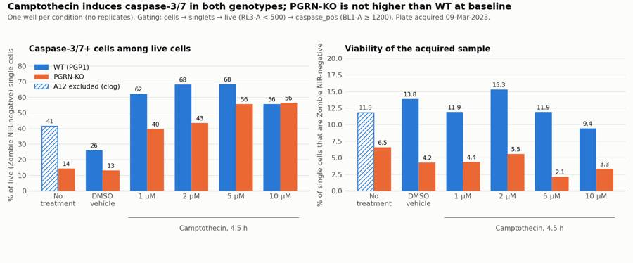
88
tool call · Bash
cd /task; python3 -I -c "
import json;q=json.load(open('work/qc.json'))
for w,v in q.items(): print(w, round(v['med']), round(v['coinc'],1), round(v['satF'],2), round(v['first20'],1))
"; cut -c1-400 outputs/flags.csv | head -889
tool output
A2 7952 9.0 1.27 44.2 A4 9496 9.3 0.69 42.9 A6 9116 9.2 0.78 44.4 A7 8537 7.9 0.34 43.8 A8 8494 7.5 0.49 45.8 A9 9134 9.2 0.6 44.4 A10 11839 12.5 1.27 45.9 A11 8140 7.5 0.35 43.4 A12 12400 14.1 1.42 0.7 B2 8382 6.6 0.04 42.8 B4 13170 10.2 0.04 44.0 B6 9902 7.9 0.09 43.3 B7 13010 10.7 0.1 44.5 B8 10816 8.5 0.09 45.9 B9 9334 6.7 0.06 44.9 B10 11644 8.8 0.08 44.3 B11 12415 9.9 0.09 45.0 B12 11435 9.5 0.14 44.7 file,well,issue_type,evidence,decision Caspase_WT_KO_optimization_caspase_Group_A2.fcs,A2,none,"No issue: 365736 events, steady flow (1-s rate 6524-8559/s, median 7952/s; 44.2% of events in first 20 s), BL1-A saturated 0.000%, FSC-A saturated 1.27%, 141481 events in live gate",keep Caspase_WT_KO_optimization_caspase_Group_A4.fcs,A4,none,"No issue: 440820 events, steady flow (1-s rate 8227-10043/s, median 9496/s; 42.9% of events in first 20 s), BL1-A saturated 0.000%, FSC-A saturated 0.69%, 168533 events in live gate",keep Caspase_WT_KO_optimization_caspase_Group_A6.fcs,A6,none,"No issue: 412724 events, steady flow (1-s rate 7515-9741/s, median 9116/s; 44.4% of events in first 20 s), BL1-A saturated 0.000%, FSC-A saturated 0.78%, 17513 events in live gate",keep Caspase_WT_KO_optimization_caspase_Group_A7.fcs,A7,none,"No issue: 395514 events, steady flow (1-s rate 7127-9212/s, median 8537/s; 43.8% of events in first 20 s), BL1-A saturated 0.000%, FSC-A saturated 0.34%, 15402 events in live gate",keep Caspase_WT_KO_optimization_caspase_Group_A8.fcs,A8,none,"No issue: 384992 events, steady flow (1-s rate 6222-12591/s, median 8494/s; 45.8% of events in first 20 s), BL1-A saturated 0.001%, FSC-A saturated 0.49%, 19276 events in live gate; one 1-s burst at 12591/s (1.48x median) does not change the readout (68.2% vs 68.3% caspase_pos/live without/with it)",keep Caspase_WT_KO_optimization_caspase_Group_A9.fcs,A9,none,"No issue: 428254 events, steady flow (1-s rate 7638-10328/s, median 9134/s; 44.4% of events in first 20 s), BL1-A saturated 0.000%, FSC-A saturated 0.60%, 25870 events in live gate",keep Caspase_WT_KO_optimization_caspase_Group_A10.fcs,A10,none,"No issue: 552590 events, steady flow (1-s rate 9391-13883/s, median 11839/s; 45.9% of events in first 20 s), BL1-A saturated 0.005%, FSC-A saturated 1.27%, 22394 events in live gate",keep
91
tool call · Bash
cd /task; cat > work/answer.py <<'EOF'
import json
a={
"question":"Is a difference in caspase-3/7 activity present in PGRN-KO compared with WT (PGP1) iPSC-derived neurons, at baseline and after camptothecin (1-10 uM, 4.5 h), in this first assay-optimisation run of the CellEvent Caspase-3/7 / Zombie NIR flow assay?",
"comparisons":[
{"comparison":"KO vs WT at baseline (DMSO vehicle), caspase-3/7+ % of live cells","a":"WT_DMSO","b":"KO_DMSO","direction":"decrease",
"magnitude":"KO 13.0% vs WT 26.0% of live single cells caspase-3/7+ (-13.0 percentage points, 0.50-fold); one well per genotype","confidence":"low"},
{"comparison":"Camptothecin (1-10 uM pooled) vs DMSO in WT, caspase-3/7+ % of live cells","a":"WT_DMSO","b":"WT_CPT_pooled_1to10uM","direction":"increase",
"magnitude":"26.0% -> 63.5% (SD 6.0 over 4 doses; range 55.5-68.3%), +37.5 points, 2.4-fold; no dose-response between 1 and 10 uM","confidence":"medium"},
{"comparison":"Camptothecin (1-10 uM pooled) vs DMSO in KO, caspase-3/7+ % of live cells","a":"KO_DMSO","b":"KO_CPT_pooled_1to10uM","direction":"increase",
"magnitude":"13.0% -> 48.7% (SD 8.5 over 4 doses; 39.5% at 1 uM rising to 56.3% at 10 uM), +35.7 points, 3.8-fold","confidence":"medium"},
{"comparison":"KO vs WT under camptothecin (1-10 uM pooled), caspase-3/7+ % of live cells","a":"WT_CPT_pooled_1to10uM","b":"KO_CPT_pooled_1to10uM","direction":"decrease",
"magnitude":"KO 48.7% (SD 8.5) vs WT 63.5% (SD 6.0), -14.8 points; KO lower at 1, 2 and 5 uM, equal at 10 uM (56.3% vs 55.5%)","confidence":"low"},
{"comparison":"KO vs WT viability of the acquired sample (DMSO wells), live % of single cells","a":"WT_DMSO_viability","b":"KO_DMSO_viability","direction":"decrease",
"magnitude":"KO 4.2% vs WT 13.8% Zombie NIR-negative single cells (-9.6 points, 0.31-fold); KO lower than WT in every matched pair of wells","confidence":"low"}
],
"overall_answer":"no: this run does not show higher caspase-3/7 activity in PGRN-KO than in WT neurons. Among live cells the KO vehicle well was lower than WT (13.0% vs 26.0% caspase-3/7+), the opposite of the expected direction, and KO stayed at or below WT at every camptothecin dose. Camptothecin raised the caspase-3/7+ fraction in both genotypes (WT 2.4-fold, KO 3.8-fold), so the assay does detect induced caspase activity. The genotype comparison is not reliable yet: each condition is a single well, only 2-15% of single cells were viable at acquisition, and KO samples were about 3-fold less viable than WT.",
"assay_verdict":"needs_optimisation",
"next_action":"repeat_with_change",
"next_change":{
"what":"Cell harvest before staining and acquisition (dissociation of the neurons)",
"from":"150 uL accutase for 5-10 min, FBS quench, transfer to a round-bottom plate and 200 x g spins before Zombie NIR and CellEvent staining; this left only 2-15% of single cells Zombie NIR-negative, even in untreated wells",
"to":"A gentler harvest validated to give a mostly viable untreated control (aim for >70% Zombie NIR-negative single cells): shortest workable accutase or papain with DNase, wide-bore pipetting, floating cells collected with the well, samples kept cold and acquired immediately; run in at least 3 replicate wells per genotype and treatment",
"why":"85-98% of single cell-sized events were dead in every stained well, so the caspase readout rests on a small, selected survivor population (3,441-25,870 cells) that differs about 3-fold between genotypes; dead cells take up CellEvent regardless of caspase activity (89-95% of all single cells are green in the caspase-only wells), and without replicate wells the 13-point WT-KO difference cannot be tested."
},
"excluded_wells":["A12"],
"caveats":[
"One well per condition: no replicate wells, so no statistics on the genotype comparison; the pooled camptothecin rows average four different doses, not replicates.",
"Viability was very low in all stained wells (live = 9.4-15.3% of single cells in WT, 2.1-6.8% in KO, including untreated L/D-only controls), so the readout comes from a small survivor population and cells that already died are not counted as caspase-positive.",
"KO samples were about 3-fold less viable than WT; this could be biology (more KO cell death) or harvest damage, and this run cannot tell which.",
"A12 (WT no treatment) clogged (0.7% of events in the first 20 s, then a burst to 22,923 events/s) and is excluded, so WT has no usable untreated control and the DMSO effect in WT cannot be checked; in KO, DMSO (13.0%) and no treatment (14.1%) agree.",
"The caspase gate (BL1-A >= 1200) splits two clean peaks in KO but cuts through a broader, shifting distribution in WT: moving it to 900 or 1600 changes WT DMSO from 31.9% to 20.7% and KO DMSO from 13.8% to 12.2%; WT stays above KO at baseline at all three thresholds.",
"Vehicle is not matched: the DMSO control is about 2% v/v (10 uL in 500 uL) while camptothecin wells range from about 0.4% (1 uM) to 3.8% (10 uM) DMSO.",
"Acquisition was fast (median 8,000-13,000 events/s at 200 uL/min) with 6.6-14.1% of events flagged coincident by the instrument; a width-based singlet gate was applied but some coincidence will remain.",
"No-stain and caspase-only wells have no Zombie NIR, so their live gate passes ~100% of cells and their caspase_pos/live values are not comparable with the fully stained wells; the L/D-only wells are the gating control for caspase_pos (0.20% WT, 0.14% KO)."
]
}
json.dump(a,open('/task/outputs/answer.json','w'),indent=2)
EOF
python3 -I work/answer.py
cat > outputs/report.md <<'EOF'
# Caspase-3/7 assay in WT vs PGRN-KO iPSC-derived neurons (plate acquired 09-Mar-2023)
**Bottom line:** this run does not show higher caspase-3/7 activity in PGRN-KO than in WT neurons. Among live cells, the KO vehicle well was lower than WT (13.0% vs 26.0% caspase-3/7+). Camptothecin raised the caspase-3/7+ fraction in both genotypes, so the assay detects induction, but it needs optimisation bef
… [9,881 more characters not shown]92
tool output
count mismatches: 0 rows 90 [5]
pct check max err 4.966508886639076e-05
issue_type decision
clog exclude 1
none keep 17
dtype: int64
True
True True ['condition', 'wells', 'n_wells_used', 'mean', 'sd', 'metric_definition', 'normalisation_applied'] ['file', 'well', 'population', 'role', 'parent', 'count', 'pct_of_parent'] ['file', 'well', 'issue_type', 'evidence', 'decision']
['## Question', '## Methods', '## Results', '## Conclusion', '## Caveats', '## Recommendation']
('cells', ('root',)) [('FSC-A', 'uncompensated', None, None), ('SSC-A', 'uncompensated', None, None)]
('singlets', ('root', 'cells')) [('FSC-A', 'uncompensated', None, None), ('FSC-W', 'uncompensated', None, None)]
('live', ('root', 'cells', 'singlets')) [('RL3-A', 'uncompensated', None, 500.0)]
('caspase_pos', ('root', 'cells', 'singlets', 'live')) [('BL1-A', 'uncompensated', 1200.0, None)]
total 204
drwxr-xr-x 2 root root 4096 Nov 10 19:22 .
drwxr-xr-x 5 root root 4096 Nov 10 19:13 ..
-rw-r--r-- 1 root root 5730 Nov 10 19:22 answer.json
-rw-r--r-- 1 root root 1883 Nov 10 19:21 condition_summary.csv
-rw-r--r-- 1 root root 8033 Nov 10 19:19 counts.csv
-rw-r--r-- 1 root root 152716 Nov 10 19:21 figure.png
-rw-r--r-- 1 root root 4826 Nov 10 19:21 flags.csv
-rw-r--r-- 1 root root 3156 Nov 10 19:19 gates.xml
-rw-r--r-- 1 root root 8815 Nov 10 19:22 report.md94
tool call · Bash
cd /task; sed -i 's/changes the readout by under 3 points in any well/changes the readout by 3 points or less in any well/' outputs/report.md; grep -c "3 points or less" outputs/report.md; python3 -I -c "import json;json.load(open('/task/outputs/answer.json'));print('json ok')"95
tool output
1 json ok
96
agent
The analysis is complete: this plate does not show higher caspase-3/7 activity in PGRN-KO than in WT neurons, and the assay needs optimisation before it can carry that comparison. Re-applying the saved gates to the raw files reproduces `counts.csv` exactly.
## Answer to the plan's question
- **KO vs WT at baseline:** among live cells, the KO DMSO well was 13.0% caspase-3/7+ against 26.0% in WT — the opposite of the expected direction. This is one well per genotype, so confidence is low.
- **Camptothecin works as an inducer in both genotypes:** WT rose from 26.0% to 63.5% (mean of the four doses, 2.4-fold) and KO from 13.0% to 48.7% (3.8-fold). WT is already at plateau at 1 µM; KO rises gradually to 56.3% at 10 µM.
- **KO stayed at or below WT under camptothecin:** lower at 1, 2 and 5 µM, equal at 10 µM.
- **Viability is the main problem:** only 9.4–15.3% of single cells were Zombie NIR-negative in WT and 2.1–6.8% in KO, including untreated controls. The readout therefore rests on a small survivor population that differs about 3-fold between genotypes.
## Wells and gating
- **A12 (WT no treatment) is excluded as a clog:** only 0.7% of its events arrived in the first 20 s, followed by a burst of up to 22,923 events/s. That leaves WT without a usable untreated control.
- **The other 17 wells are kept.** All six staining controls show the expected pattern and nothing looks mislabelled.
- **Gating** is cells → singlets → live (RL3-A < 500) → caspase_pos (BL1-A ≥ 1200), uncompensated. The primary readout is caspase_pos as a percentage of live.
- **Singlets are gated on FSC-A × FSC-W**, not height, because FSC-H flattens at about 190k on this instrument.
- **The caspase gate is less certain in WT:** it splits two clean peaks in KO but cuts through a broader distribution in WT. Moving it to 900 or 1600 changes WT DMSO to 31.9% or 20.7%; WT stays above KO at baseline either way.
## Recommendation
I recommend repeating the run with a gentler harvest, aiming for more than 70% viable cells in the untreated control before reading any genotype difference. The report also recommends at least 3 replicate wells per condition, a matched low DMSO concentration (the control was about 2% while camptothecin wells ranged from about 0.4% to 3.8%), and slower acquisition.
Files are in `/task/outputs/`:
- `gates.xml`
- `counts.csv`
- `flags.csv`
- `condition_summary.csv`
- `figure.png`
- `report.md`
- `answer.json`
final result
The analysis is complete: this plate does not show higher caspase-3/7 activity in PGRN-KO than in WT neurons, and the assay needs optimisation before it can carry that comparison. Re-applying the saved gates to the raw files reproduces `counts.csv` exactly. ## Answer to the plan's question - **KO vs WT at baseline:** among live cells, the KO DMSO well was 13.0% caspase-3/7+ against 26.0% in WT — the opposite of the expected direction. This is one well per genotype, so confidence is low. - **Camptothecin works as an inducer in both genotypes:** WT rose from 26.0% to 63.5% (mean of the four doses, 2.4-fold) and KO from 13.0% to 48.7% (3.8-fold). WT is already at plateau at 1 µM; KO rises gradually to 56.3% at 10 µM. - **KO stayed at or below WT under camptothecin:** lower at 1, 2 and 5 µM, equal at 10 µM. - **Viability is the main problem:** only 9.4–15.3% of single cells were Zombie NIR-negative in WT and 2.1–6.8% in KO, including untreated controls. The readout therefore rests on a small survivor population that differs about 3-fold between genotypes. ## Wells and gating - **A12 (WT no treatment) is excluded as a clog:** only 0.7% of its events arrived in the first 20 s, followed by a burst of up to 22,923 events/s. That leaves WT without a usable untreated control. - **The other 17 wells are kept.** All six staining controls show the expected pattern and nothing looks mislabelled. - **Gating** is cells → singlets → live (RL3-A < 500) → caspase_pos (BL1-A ≥ 1200), uncompensated. The primary readout is caspase_pos as a percentage of live. - **Singlets are gated on FSC-A × FSC-W**, not height, because FSC-H flattens at about 190k on this instrument. - **The caspase gate is less certain in WT:** it splits two clean peaks in KO but cuts through a broader distribution in WT. Moving it to 900 or 1600 changes WT DMSO to 31.9% or 20.7%; WT stays above KO at baseline either way. ## Recommendation I recommend repeating the run with a gentler harvest, aiming for more than 70% viable cells in the untreated control before reading any genotype difference. The report also recommends at least 3 replicate wells per condition, a matched low DMSO concentration (the control was about 2% while camptothecin wells ranged from about 0.4% to 3.8%), and slower acquisition. Files are in `/task/outputs/`: - `gates.xml` - `counts.csv` - `flags.csv` - `condition_summary.csv` - `figure.png` - `report.md` - `answer.json`